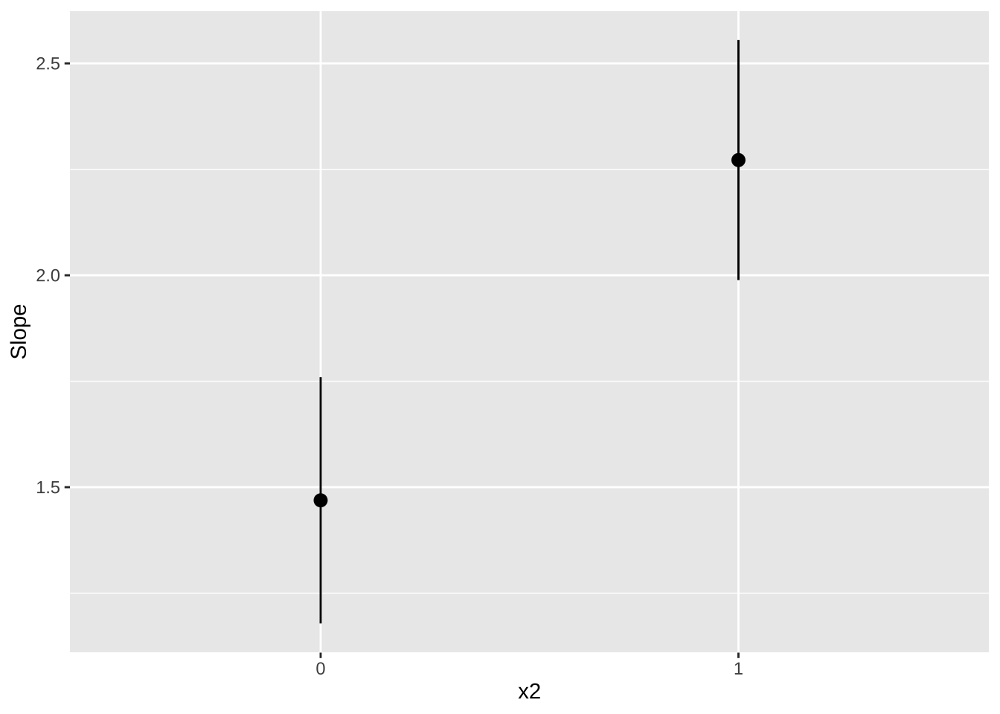
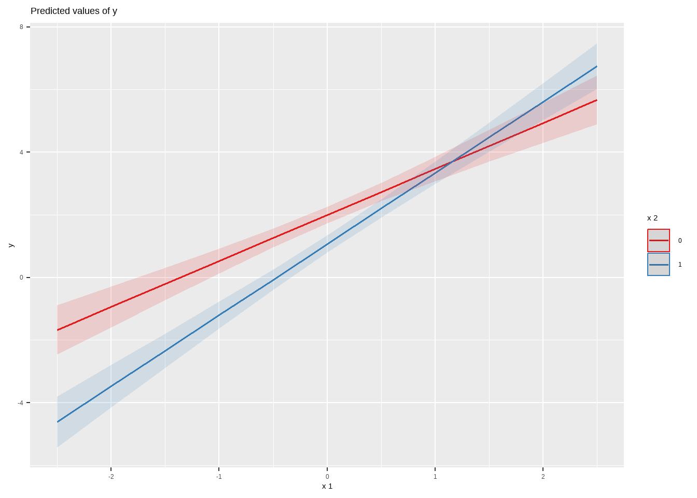

Capítulo 12 - Regressao Multipla
É muito raro que tenhamos apenas um preditor em um contexto de regressão. Talvez em um experimento de laboratório, e mesmo assim é difícil não ter outros preditores. De modo que tudo que vimos até agora é um caso particular raríssimo e pouco útil per se. Para generalizar as derivações e resultados para múltiplos preditores é conveniente utilizar álgebra linear. Basicamente, isso significa usar vetores e matrizes para representar a regressão. As derivações das fórmulas ficam bem fáceis, bem como as propriedades do modelo de regressão. Como não estamos pressupondo que vocês conheçam o básico de Álgebra Linear, iremos pular as derivações e apresentar apenas as intuições, esperando que o que vocês aprenderam com um preditor seja suficiente para entender com múltiplos preditores.
12.1 Revisão de Matriz e Vetores
Regressão múiltipla é mais facilmente compreendida com uso de matrizes. Portanto, vamos fazer uma rápida revisão da álgebra de vetores e matrizes.
Se eu tenho um vetor \(x = [ a_1, a_2, ..., a_n]\), digo que este é um vetor linha com \(n\) elementos. É possível também ter um vetor coluna:
\[ \begin{align} x &= \begin{bmatrix} a_{1} \\ a_{2} \\ \vdots \\ a_{n} \end{bmatrix} \end{align} \] Eu posso somar dois vetores linhas ou dois vetores colunas, se tiverem o mesmo número de elementos. Por exemplo, dois vetores colunas. \[ \begin{align} \begin{bmatrix} a_{1} \\ \vdots \\ a_{n} \end{bmatrix} + \begin{bmatrix} b_{1} \\ \vdots \\ b_{n} \end{bmatrix} &= \begin{bmatrix} a_1 + b_{1} \\ \vdots \\ a_n + b_{n} \end{bmatrix} \end{align} \] E posso fazer multiplicação de vetores (existem vários tipos, aqui me restringo ao produto interno ou produto ponto de vetores), desde que a gente multiplique um vetor linha por uma vetor coluna, mas não o contrário.
\[ \begin{align} \begin{bmatrix} a_{1}, a_2, \cdots, a_{n} \end{bmatrix} \cdot \begin{bmatrix} b_{1} \\ b_{2} \\ \vdots \\ b_{n} \end{bmatrix} &= a_1 \cdot b_{1} + a_2 \cdot b_2 \cdots + a_n \cdot b_{n} \end{align} \] A razão é que a multiplicação de vetores (e matrizes em geral) é basicamente multiplicar linha com coluna. No caso de um vetor coluna multiplicado por um linha, isso não é possível.
A adição e multiplicação de matrizes é basicamente a generalização da ágebra com vetores
12.2 Modelo básico
O modelo básico de regressão linear múltipla pode ser especificado por:
Existem p preditores, \(X_1\), \(X_2\), …, \(X_p\). Não precisamos fazer suposições sobre a distribuição dos preditores, e podem ser correlacionados ou não.
Há uma única variável resposta, \(Y\). Se houvesse mais de uma, teríamos um modelo de regressão multivariada.
\(y_i = \alpha + \beta_1 \cdot x_{1i} + \beta_2 \cdot x_{2i} + ... + \beta_p \cdot x_{pi} + e_i\). Portanto, temos \(p+1\) parâmetros ou coeficientes de regressão a estimar.
O erro \(e_i\) possui esperança condicional zero e variância condicional constante no modelo homocedástico, e não correlacionado entre observações.
Se assumirmos normalidade do termo de erro, temos também:
- O erro \(e_i\) tem uma distribuição normal multivariada, com vetor de médias zero e matriz de variância e covariância cujos elementos fora da diagonal (covariância) são zero, e a diagonal principal é \(\sigma^2\).
12.3 Modelo com matrizes
Vejam que \(\alpha + \beta_1 \cdot x_{1i} + \beta_2 \cdot x_{2i} + ... + \beta_p \cdot x_{pi} + e_i\) é uma soma de produtos, similar ao que eu tinha com vetores no exemplo acima. Exceto que \(\alpha\) não multiplica nada. Então, vou considerar que tenhao um preditor cujo valor é uma constante e igual a \(1\), e os demais preditores, de forma que o lado direito da equação de regressão pode ser reescrito como soma e multiplicação de matrizes. Para o caso de um preditor \(y_i = \alpha + \beta_ix_{1i} + e_i\), a equação de regressão com matrizes, fica:
\[ \begin{align} \begin{bmatrix} y_1 \\ y_2 \\ \vdots \\ y_{n} \end{bmatrix} &= \begin{bmatrix} 1 & x_{11} \\ 1 & x_{12} \\ \vdots \\ 1 & x_{1n} \end{bmatrix} \begin{bmatrix} \alpha \\ \beta_1 \\ \end{bmatrix} + \begin{bmatrix} e_1 \\ e_2 \\ \vdots \\ e_n \end{bmatrix} \end{align} \] Se eu chamar o vetor coluna com os \(y\) de \(Y\), a matriz com a constante \(1\) e \(x_{1i}\) de \(X\), o vetor de coeficientes de \(B\) e o vetor de erros \(\epsilon\), tenho então:
\[ Y = XB + \epsilon \] Veja que a generalização para \(p\) preditores gera a mesma equação:
\[ \begin{align} \begin{bmatrix} y_1 \\ y_2 \\ \vdots \\ y_{n} \end{bmatrix} &= \begin{bmatrix} 1 & x_{11} & x_{21} \cdots & x_{p1}\\ 1 & x_{12} & x_{22} \cdots & x_{p2}\\ \vdots \\ 1 & x_{1n} & x_{2n} \cdots & x_{pn} \end{bmatrix} \begin{bmatrix} \alpha \\ \beta_1 \\ \beta_2 \\ \vdots \\ \beta_p \end{bmatrix} + \begin{bmatrix} e_1 \\ e_2 \\ \vdots \\ e_n \end{bmatrix} \end{align} \]
\[ Y = XB + \epsilon \]
A única diferença é o tamanho da matriz \(X\) e \(B\), em que \(X\) é uma matriz \(n \times (p+1)\), isto é, com \(n\) linhas e \(p+1\) colunas, e \(B\) é uma matriz de tamanho \((p+1) \times 1\) e \(Y\) e \(\epsilon\) são \(n \times 1\). E as suposições podem ser escritas como \(\mathbb{E}[\epsilon|X] = 0\) e \(\mathbb{Var}[\epsilon|X] = \sigma^2I\), em que \(I\) é a matriz identidade, isto é, uma matriz cuja diagonal principal é \(1\) e o resto é \(zero\).
12.3.1 Estimador de MQO
É possível mostrar que o estimador de mínimos quadrados ordinários é dados por:
\[ \hat{B} = (X'X)^{-1} \cdot X'Y \] Veja que \(X'Y\) é um produto (com soma) entre \(X\) e \(Y\), ou seja, é como se fosse a covariância entre \(X\) e \(Y\), e \(X'X\) se assemelha à variância de \(X\). E está elevado a \(-1\) porque não existe divisão em matriz, de forma que preciso multiplicar pela inversa.
12.4 Interpretação dos coeficientes
Nosso coeficiente \(\alpha\) é novamente o valor esperado do \(Y\) na origem, isto é:
\[ \alpha = \mathbb{E}[Y|X_1=0, X_2=0, \cdots, X_p=0]$ \] Em um modelo sem interações, o efeito de cada variávei \(X_i\) é a contribuição separada para a resposta esperada (média). Portanto, \(B_i\) mede a contribuição de como \(\mathbb{E}[Y]\) muda à medida que \(X_i\) (e apenas \(X_i\)) muda, para qualquer valor de \(X_i\) (se a equação for linear nas variáveis) e para qualquer valor das demais variáveis (pressuposto de aditividade, sem interação, dos preditores).
Vamos retomar nosso modelo de previsão eleitoral e rodar no R, agora adicionando múltipals variáveis.
library(data.table)
# lista o nome do arquivo em csv
# unzip(here("dados", "votacao_secao_2018_BR.zip"), list = TRUE)
#read data1.csv into data frame
presid_18 <- fread(here("dados","votacao_secao_2018_BR.csv"), encoding = "Latin-1")
# Supondo que seu dataframe seja chamado df
df_resultados <- presid_18 %>%
dplyr::filter(!NR_VOTAVEL %in% c(95,96)) %>%
group_by(NR_ZONA, CD_MUNICIPIO, SG_UF, NR_VOTAVEL, NR_TURNO) %>%
summarise(total_votos = sum(QT_VOTOS)) %>%
pivot_wider(names_from = NR_TURNO, values_from = total_votos, values_fill = 0) %>%
janitor::clean_names() %>%
group_by(nr_zona, cd_municipio, sg_uf) %>%
mutate(total_validos_1t = sum(x1),
total_validos_2t = sum(x2)) %>%
dplyr::filter(nr_votavel %in% c(13,17)) %>%
group_by(nr_votavel) %>%
mutate(percentual_1t = x1 /total_validos_1t,
percentual_2t = x2 / total_validos_2t) %>%
ungroup() %>%
dplyr::select(-c(x1, x2, total_validos_1t, total_validos_2t)) %>%
pivot_wider(names_from = nr_votavel,
values_from = c(percentual_1t, percentual_2t))
# remove
# rm(presid_18)
df_resultados %>%
ggplot(aes(x=percentual_1t_17, y=percentual_2t_17)) + geom_point() + facet_wrap(~sg_uf) + geom_smooth(method="lm", se=F, linewidth = .5)
# modelo de regressão
reg1 <- lm(percentual_2t_17 ~ percentual_1t_17 + percentual_1t_13 + sg_uf, data = df_resultados)
summary(reg1)##
## Call:
## lm(formula = percentual_2t_17 ~ percentual_1t_17 + percentual_1t_13 +
## sg_uf, data = df_resultados)
##
## Residuals:
## Min 1Q Median 3Q Max
## -0.190977 -0.010934 -0.001161 0.009747 0.272558
##
## Coefficients:
## Estimate Std. Error t value Pr(>|t|)
## (Intercept) 0.355531 0.005763 61.689 <2e-16 ***
## percentual_1t_17 0.777791 0.005276 147.419 <2e-16 ***
## percentual_1t_13 -0.277355 0.004577 -60.603 <2e-16 ***
## sg_ufAL -0.101170 0.004644 -21.787 <2e-16 ***
## sg_ufAM -0.084715 0.004815 -17.596 <2e-16 ***
## sg_ufAP -0.087085 0.006414 -13.577 <2e-16 ***
## sg_ufBA -0.086392 0.004355 -19.835 <2e-16 ***
## sg_ufCE -0.150819 0.004654 -32.406 <2e-16 ***
## sg_ufDF -0.077372 0.006221 -12.437 <2e-16 ***
## sg_ufES -0.079796 0.004701 -16.974 <2e-16 ***
## sg_ufGO -0.085402 0.004352 -19.624 <2e-16 ***
## sg_ufMA -0.105331 0.004464 -23.596 <2e-16 ***
## sg_ufMG -0.065445 0.004235 -15.454 <2e-16 ***
## sg_ufMS -0.061922 0.004685 -13.219 <2e-16 ***
## sg_ufMT -0.088621 0.004493 -19.722 <2e-16 ***
## sg_ufPA -0.071259 0.004489 -15.876 <2e-16 ***
## sg_ufPB -0.119179 0.004447 -26.801 <2e-16 ***
## sg_ufPE -0.113396 0.004454 -25.458 <2e-16 ***
## sg_ufPI -0.091415 0.004480 -20.404 <2e-16 ***
## sg_ufPR -0.060601 0.004284 -14.145 <2e-16 ***
## sg_ufRJ -0.096635 0.004433 -21.797 <2e-16 ***
## sg_ufRN -0.112249 0.004522 -24.826 <2e-16 ***
## sg_ufRO -0.059576 0.004958 -12.017 <2e-16 ***
## sg_ufRR -0.085327 0.006511 -13.104 <2e-16 ***
## sg_ufRS -0.061179 0.004262 -14.353 <2e-16 ***
## sg_ufSC -0.061522 0.004327 -14.220 <2e-16 ***
## sg_ufSE -0.094247 0.004814 -19.578 <2e-16 ***
## sg_ufSP -0.039378 0.004250 -9.265 <2e-16 ***
## sg_ufTO -0.095958 0.004526 -21.202 <2e-16 ***
## sg_ufZZ -0.081547 0.004558 -17.892 <2e-16 ***
## ---
## Signif. codes: 0 '***' 0.001 '**' 0.01 '*' 0.05 '.' 0.1 ' ' 1
##
## Residual standard error: 0.02 on 6209 degrees of freedom
## (1 observation deleted due to missingness)
## Multiple R-squared: 0.9918, Adjusted R-squared: 0.9918
## F-statistic: 2.588e+04 on 29 and 6209 DF, p-value: < 2.2e-16A interpretação das variáveis, portanto, é a seguinte:
O intercepto mede o percentual médio no segundo turno quando todas as variáveis são zero. Ou seja, Haddad e Bolsonaro tiveram 0 pontos percentuais (não existe caso assim!) e a UF é o Acre, que é a categoria de referência.
A variável “percentual_1t_17” mede o efeito preditivo no voto do 2o turno do Bolsonaro de aumento de um ponto percentual no voto do primeiro turno, que é de 0,77 pontos percentuais. A variável “percentual_1t_13” mede similarmente o efeito preditivo de aumento de um ponto percentual do voto do Haddad no primeiro turno sobre o voto do Bolsonaro no 2o turno. Como esperado, a relação é negativa, isto é, quanto melhor o Haddad foi no primeiro turno, pior o Bolsonaro no segundo turno naquela seção eleitoral. E o efeito de cada UF é o efeito de estar naquela UF, em comparação com a categoria de referência, ACRE.
12.5 Regressão múltipla versus Múltiplas Regressões Separadas ou Viés de variável omitida
Rodar uma regressão com duas variáveis (digamos), não é o mesmo que rodar duas regressões separadas, uma com cada variável. A razão é que os preditores em geral terão alguma correlação entre si. Para ver isso, suponha que o verdadeiro modelo é \(Y = \alpha + \beta_1 \cdot X_1 + \beta_2 \cdot X_2 + \epsilon\). O que aconteceria se rodássemos uma regressão com um preditor apenas (\(X_1\))?
Vamos usar as seguintes propriedades da covariância nessa derivação.
Sejam \(X\) e \(Y\) duas v.a., Seja \(A\) uma constante. Então, \(\mathbb{Cov}[X,Y + A] = \mathbb{Cov}[X,Y] + \mathbb{Cov}[X,A]\). Como \(A\) é constante, \(\mathbb{Cov}[X,A] = 0\) e, portanto, \(\mathbb{Cov}[X,Y + A] = \mathbb{Cov}[X,Y]\).
\(\mathbb{Cov}[X,Y \cdot A] = A \cdot \mathbb{Cov}[X,Y]\).
Em um modelo com um único preditor, teremos: \(Y = \alpha + \beta_1^* \cdot X_1 + \epsilon\)
Designei o beta da equação com um preditor por \(\beta_1^*\), para diferenciar do \(\beta_1\) da verdadeira equação, com dois preditores.
Nós sabemos que \(\beta_1^* = \frac{\mathbb{Cov}[X_1,Y]}{\mathbb{Var}[X_1]}\)
Vamos substituir o \(Y\) do modelo verdadeiro na equação do \(\beta_1^*\).
\[\begin{align*} \beta_1^* = \frac{\mathbb{Cov}[X_1,\alpha + \beta_1 \cdot X_1 + \beta_2 \cdot X_2 + e]}{\mathbb{Var}[X_1]} = \\ \frac{\mathbb{Cov}[X_1,\beta_1 \cdot X_1] + \mathbb{Cov}[X_1, \beta_2 \cdot X_2] + \mathbb{Cov}[X_1, e]}{\mathbb{Var}[X_1]} = \\ \frac{\beta_1 \cdot \mathbb{Cov}[X_1, X_1] + \beta_2 \cdot \mathbb{Cov}[X_1, X_2] + \mathbb{ Cov}[X_1,e]}{\mathbb{Var}[X_1]} = \\ \frac{\beta_1 \cdot \mathbb{Var}[X_1] + \beta_2 \cdot \mathbb{Cov}[X_1, X_2] + 0}{\mathbb{Var}[X_1]} = \\ \frac{\beta_1 \cdot \mathbb{Var}[X_1]}{\mathbb{Var}[X_1]} + \frac{\beta_2 \cdot \mathbb{Cov}[X_1, X_2] + 0}{\mathbb{Var}[X_1]} = \\ \beta_1 + \frac{\beta_2 \cdot \mathbb{Cov}[X_1, X_2] + 0}{\mathbb{Var}[X_1]} = \\ \beta_1^* = \beta_1 + \frac{\beta_2 \cdot \mathbb{Cov}[X_1, X_2]}{\mathbb{Var}[X_1]} \end{align*}\]
Vemos que a inclinação \(\beta_1^*\) inclui a contribuição direta de \(X_1\) via \(\beta_1\) mais a contribuição indireta da correlação com \(X_2\), via \(\beta_2\).
Portanto, se eu rodar uma regressão com um preditor quando o verdadeiro modelo tem dois preditores, o coeficiente de \(\beta_1^*\) será uma média entre \(\beta_1\) e \(\beta_2\). Por outro lado, se eu rodar a regressão com o modelo correto com os dois preditores, consigo que \(\beta_1^*\) reflita só a contribuição de \(\beta_1\).
Talvez você esteja se perguntando a essa altura: quem garante que o verdadeiro modelo possua só dois preditores? Isso é o que chamamos de viés de variável omitida. Se omitirmos da regressão uma variável \(X_k\) correlacionada com \(X_j\), \(j \neq k\), então o coeficiente \(\beta_j\) reflitirá também o efeito de \(\beta_k\).
Aqui não estamos falando de causalidade, apenas da contribuição para a previsão da nossa variável resposta. Naturalmente, antes da moderna abordagem de inferência causal por resultados potenciais de Rubin (ou redes Bayesianas em modelos estruturais de Pearl), as pessoas pensavam que, controlando para o máximo de variáveis possível, com sorte seria possível eliminar (ou reduzir a um mínimo) o viés de variável omitida e, portanto, estar seguro que \(\beta_1\) estimaria o efeito causal.
Nós hoje sabemos que o modo mais seguro de pensar causalidade é usando uma das duas abordagens (as iniciadas por Rubin ou Pearl), e verificando (por exemplo com resultados potenciais) que a suposição de independência condicional (CIA, de Conditional Independence Assumption) é plausível para poder interpretar \(\beta_1\) causalmente. Sem um modelo causal, a abordagem de introdução de regressores para controlar o viés de variável omitida não nos permite fazer inferência causal, exceto em casos muitos simples ou quando implicitamente temos garantida a validade da CIA (como em um experimento bem conduzido e com compliance), como é o caso das ciências naturais como física e química.
12.6 Matriz chapéu
Uma forma interessante de visualizar as previsões do modelo é que podemos escrever \(\hat{Y} = XB\). Substituindo a fórmula do \(B\), temos que: \[ \hat{Y} = X (X'X)^{-1}X'Y = \\ (X (X'X)^{-1}X')Y = \\ HY \] Essa equação mostra que as previsões são dadas pelas respostas observadas, ponderadas pela matriz chapéu (hat), \(H\).
12.7 Multicolinearidade
Até o momento não falamos sobre em que condições a matrix inversa \(X'X^{-1}\) existe. Nós sabemos que nem todas as matrizes podem ser invertíveis. Matrizes com determinante zero são não-invertíveis. A intuição é como pensar que não é possível dividir um escalar por zero. O determinante é zero quando as colunas não são linearmente independentes. Ou seja, quando uma coluna (ou mais) é uma combinação linear de um ou mais colunas. No nosso caso, quando a correlação for \(1\) (ou \(-1\)). Nesses casos, não é possível estimar os coeficientes da regressão e acontece quando temos multicolinearidade.
Softwares modernos, como R, irão “dropar” uma (ouas mais) variável(eis) se isso ocorrer, automaticamente, para evitar que a matriz não seja invertível. Assim, a menos que acorrelação seja perfeita, multicolinearidade não costuma ser um problema.
12.8 Erro padrão Robusto
Na presença de heterocedasticidade ou correlação nos erros (como autocorrelação temporal ou autocorrelação espacial), precisamos corrigir o cálculo do erro padrão. Para explicar como é calculado o erro padrão robusto, vamos derivar o erro padrão novamente, agora com a notação matricial.
Lembremos que: \(\hat{B} = (X'X)^{-1}(X'Y)\) e \(Y = XB + e\). Logo, reescrevendo a equação de regressão, temos: \[\begin{align} \hat{B} = (X'X)^{-1}(X'[XB + e]) \\ = (X'X)^{-1}(X'XB + X'e) \\ = (X'X)^{-1}X'XB + (X'X)^{-1}X'e \\ = B + (X'X)^{-1}X'e \end{align}\]
E a partir dessa equação, podemos calcular a variância dos estimadores.
\[\begin{align} \mathbb{Var}[\hat{B}|X] = \mathbb{Var}[B + (X'X)^{-1}X'e|X] \\ = \mathbb{Var}[(X'X)^{-1}X'e|X] \\ = (X'X)^{-1}X'\mathbb{Var}[e|X]X(X'X)^{-1} \\ = (X'X)^{-1}X'\sigma^2IX(X'X)^{-1} \\ = \sigma^2(X'X)^{-1}X'X(X'X)^{-1} \\ = \sigma^2(X'X)^{-1} \end{align}\]
Para ficar mais familiar para a gente, posso multiplicar e dividir por \(n\), que não altero a equação. Assim, temos: \[ \mathbb{Var}[\hat{B}|X] = \frac{\sigma^2}{n}(n^{-1}(X'X)^{-1}) \] Lembrem-e que a variância do \(\hat{\beta|x}\) no modelo de regressão simples era dada por: \(\frac{\sigma^2}{nS_x^2}\)
Então, \(\frac{\sigma^2}{n}\) é igual ao que tínhamos antes. À medida que \(n\) cresce, esperamos que \(X'X\) cresça, já que é uma soma sobre todos os dados \(n\). Dividingo todas as entradas da matriz por \(n\) compensa isso. Se a covariância amostral entre todos os preditores fossem iguais a zero (sem correlação), então quando calculássemos a inversa obteríamos apenas a variância amostral de \(X\) \(1/S_x^2\) na diagonal principal, e temos um termo que já conhecemos de regressão simples. Lá, como só tem um preditor, não tem como ter covariância com outro preditor.
Agora podemos falar de erro padrão robusto. Notem que em nossa derivação, a certa altura, tivemos: \[ \mathbb{Var}[\hat{B}|X] = (X'X)^{-1}X'\sigma^2IX(X'X)^{-1} \] Se chamarmos \(\sigma^2I\) de \(\Omega\), reescrevo a equação como:
\[ \mathbb{Var}[\hat{B}|X] = (X'X)^{-1}X'\Omega X(X'X)^{-1} \] E essa equação, escrita desse formato, é chamada de equação sanduíche, pois temos 1. \(X'\Omega X\) no meio 2. \((X'X)^{-1}\) nas pontas. Ou seja, a carne \(X'\Omega X\) vai no meio de duas fatias de pão \((X'X)^{-1}X'\).
Eu suponho que isso seja engraçado de alguma forma (ou talvez fosse uma forma menmômica de memorizar a equação). Mas o fato é que o termo sanduíche pegou de tal forma que nosso erro padrão robusto envolve trocar a “carne”.
Veja que definimos \(\Omega = \sigma^2I\). E \(\sigma^2I\) pressupõe que temos homecedasticidade, já que a variância do erro é constante. Temos portanto de modificar a “carne” para calcular o erro padrão-robusto. Vamos fazer isso manualmente, primeiro calculando o erro padrão tradicional, e depois o que seria um erro padrão robusto.
library(ggplot2)
library(tidyverse)
set.seed(123)
x <- c(1:8, 10, 15)
y <- c(5 + rnorm(8,sd = 1.5), 40, 65)
df <- data.frame(y=y, x=x)
df %>%
ggplot(aes(x=x, y=y)) + geom_point()
##
## Call:
## lm(formula = y ~ x)
##
## Residuals:
## Min 1Q Median 3Q Max
## -19.736 -6.320 2.465 8.326 12.481
##
## Coefficients:
## Estimate Std. Error t value Pr(>|t|)
## (Intercept) -11.0831 6.6974 -1.655 0.13655
## x 4.2401 0.9208 4.605 0.00174 **
## ---
## Signif. codes: 0 '***' 0.001 '**' 0.01 '*' 0.05 '.' 0.1 ' ' 1
##
## Residual standard error: 11.53 on 8 degrees of freedom
## Multiple R-squared: 0.7261, Adjusted R-squared: 0.6918
## F-statistic: 21.2 on 1 and 8 DF, p-value: 0.001745Nós construímos um “toy model” em que não existe relação entre \(x\) e \(y\). Porém, por causa de dois “outliers” o R achou que existia associação entre as variáveis. Como o R calcula o erro padrão? Nossa fórmula requer \(\sigma^2\), \(I\) e a matriz de preditores \(X\), que depois vou transpor, calcular inversa etc. No R, podemos computar cada um desses itens manualmente da seguinte forma.
omega <- sigma2*mat_I
bread <- solve(t(X)%*%X)
meat <- (t(X) %*% omega %*% X)
vce <- bread %*% meat %*% bread
sqrt(diag(vce))## (Intercept) x
## 6.6974057 0.9208285Se inspecionarmos omega mais detalhadamente, temos:
## [,1] [,2] [,3] [,4] [,5] [,6] [,7]
## [1,] 133.0395 0.0000 0.0000 0.0000 0.0000 0.0000 0.0000
## [2,] 0.0000 133.0395 0.0000 0.0000 0.0000 0.0000 0.0000
## [3,] 0.0000 0.0000 133.0395 0.0000 0.0000 0.0000 0.0000
## [4,] 0.0000 0.0000 0.0000 133.0395 0.0000 0.0000 0.0000
## [5,] 0.0000 0.0000 0.0000 0.0000 133.0395 0.0000 0.0000
## [6,] 0.0000 0.0000 0.0000 0.0000 0.0000 133.0395 0.0000
## [7,] 0.0000 0.0000 0.0000 0.0000 0.0000 0.0000 133.0395
## [8,] 0.0000 0.0000 0.0000 0.0000 0.0000 0.0000 0.0000
## [9,] 0.0000 0.0000 0.0000 0.0000 0.0000 0.0000 0.0000
## [10,] 0.0000 0.0000 0.0000 0.0000 0.0000 0.0000 0.0000
## [,8] [,9] [,10]
## [1,] 0.0000 0.0000 0.0000
## [2,] 0.0000 0.0000 0.0000
## [3,] 0.0000 0.0000 0.0000
## [4,] 0.0000 0.0000 0.0000
## [5,] 0.0000 0.0000 0.0000
## [6,] 0.0000 0.0000 0.0000
## [7,] 0.0000 0.0000 0.0000
## [8,] 133.0395 0.0000 0.0000
## [9,] 0.0000 133.0395 0.0000
## [10,] 0.0000 0.0000 133.0395Como falamos, é uma matriz de variância constante (homocedástica). Em nosso “toy model”, contudo, não faz sentido assumir que a variância é constante. É provável que os dois “outliers” tenham vindo de uma distribuição com variância bem maior. E isso levaria a um erro padrão maior para a o coeficiente da variável \(x\).
A questão então é como calcular essas variância diferente para esse pontos. Há inúmeras maneiras de fazer isso. A default do Stata, chamada de “HC1”, em que “HC” quer dizer “Heteroscedasticity-Consistent”. A fórmular para o erro padrão robusto “HC1” é a seguinte: \[ \frac{n}{n-k}\hat{e}^2 \] em que \(\hat{e}^2\) é o quadrado dos resíduos e \(k\) o número de parâmetros. Em nosso modelo simples, \(k=2\). E substituirmos a variância constante por essa fórmula em nossa “carne”, temos:
sigma2_hc1 <- residuals(fit)^2*(n/(n-2))
omega <- sigma2_hc1*mat_I
bread <- solve(t(X)%*%X)
meat <- (t(X) %*% omega %*% X)
vce <- bread %*% meat %*% bread
sqrt(diag(vce))## (Intercept) x
## 5.863432 0.992626Vemos que o erro-padrão robusto é maior que o anterior, mas a associação ainda é significativa. O erro padrão robusto do pacote do R “sandwich” usa o “HC3”, que possui outra fórmula, e tem desempenho melhor em amostras pequenas. Sua fórmula é:
\[ \frac{\hat{e}^2}{(1-h_i)^2} \] Aqui, \(h_i\) são os valores chapéus da matriz chapéu, \(H\), que vimos antes. Os valores chpéus variam entre \(0\) e \(1\) e quanto maior o número, mais influente a observação. Então, sabemos que nossos dois últimos números terão valores chapéu maiores, ou seja, vão inflar a variância para esses dois valores. No R, podemos calcular os valores chapéus com a função “hatvalues”.
sigma2_hc3 <- residuals(fit)^2/(1 - hatvalues(fit))^2
omega <- sigma2_hc3*mat_I
bread <- solve(t(X)%*%X)
meat <- (t(X) %*% omega %*% X)
vce <- bread %*% meat %*% bread
sqrt(diag(vce))## (Intercept) x
## 9.541330 1.917635E posso calcular o intervalo de confiança com o novo erro padrão. Obviamente, não iremos fazer na “mão” esse cálculo todo. Vamos usar os pacotes “sandwich” e “lmtest” para fazer o teste de hipótese com erro padrão robusto.
##
## t test of coefficients:
##
## Estimate Std. Error t value Pr(>|t|)
## (Intercept) -11.0831 9.5413 -1.1616 0.27889
## x 4.2401 1.9176 2.2111 0.05798 .
## ---
## Signif. codes: 0 '***' 0.001 '**' 0.01 '*' 0.05 '.' 0.1 ' ' 1Vemos, portanto, que nosso erro padrão é robusto a observações muito influentes que são “outliers”. Uma forma de verificar se temos esse problema é ver se temos resíduos grandes e observações muito influentes (valores chapéu altos). Um comando básico do R permite inspecionar visualmente se é o caso. Pontos nos cantos direitos superiores ou inferiores indica observações exibindo influência em nosso modelo.
Resíduos grandes (ou variância não constante) pode decorrer de um modelo mal-especificado (preditor ausente, ausência de interação, efeitos não lineares etc.).

Como mencionado, há vários tipos de erros padrão robustos, “HC0”, “HC1”, “HC2”, “HC3”, entre outros. Vamos falar rapidamente sobre cada uma deles. Antes disso, vamos comparar para nossa regressão como o erro padrão muda para cada um desses tipos.
library(sandwich)
library(stargazer)
library(lmtest)
m2 <- coeftest(reg1, vcovHC(reg1, type = "HC0"))
m3 <- coeftest(reg1, vcovHC(reg1, type = "HC1"))
m4 <- coeftest(reg1, vcovHC(reg1, type = "HC2"))
m5 <- coeftest(reg1, vcovHC(reg1, type = "HC3"))
stargazer(reg1,
m2,
m3,
m4,
m5, type = "html")| Dependent variable: | |||||
| percentual_2t_17 | |||||
| OLS | coefficient | ||||
| test | |||||
| (1) | (2) | (3) | (4) | (5) | |
| percentual_1t_17 | 0.778*** | 0.778*** | 0.778*** | 0.778*** | 0.778*** |
| (0.005) | (0.010) | (0.010) | (0.010) | (0.010) | |
| percentual_1t_13 | -0.277*** | -0.277*** | -0.277*** | -0.277*** | -0.277*** |
| (0.005) | (0.008) | (0.008) | (0.008) | (0.008) | |
| sg_ufAL | -0.101*** | -0.101*** | -0.101*** | -0.101*** | -0.101*** |
| (0.005) | (0.007) | (0.007) | (0.007) | (0.007) | |
| sg_ufAM | -0.085*** | -0.085*** | -0.085*** | -0.085*** | -0.085*** |
| (0.005) | (0.007) | (0.007) | (0.007) | (0.007) | |
| sg_ufAP | -0.087*** | -0.087*** | -0.087*** | -0.087*** | -0.087*** |
| (0.006) | (0.008) | (0.008) | (0.008) | (0.008) | |
| sg_ufBA | -0.086*** | -0.086*** | -0.086*** | -0.086*** | -0.086*** |
| (0.004) | (0.007) | (0.007) | (0.007) | (0.007) | |
| sg_ufCE | -0.151*** | -0.151*** | -0.151*** | -0.151*** | -0.151*** |
| (0.005) | (0.008) | (0.008) | (0.008) | (0.008) | |
| sg_ufDF | -0.077*** | -0.077*** | -0.077*** | -0.077*** | -0.077*** |
| (0.006) | (0.007) | (0.007) | (0.007) | (0.008) | |
| sg_ufES | -0.080*** | -0.080*** | -0.080*** | -0.080*** | -0.080*** |
| (0.005) | (0.007) | (0.007) | (0.007) | (0.007) | |
| sg_ufGO | -0.085*** | -0.085*** | -0.085*** | -0.085*** | -0.085*** |
| (0.004) | (0.007) | (0.007) | (0.007) | (0.007) | |
| sg_ufMA | -0.105*** | -0.105*** | -0.105*** | -0.105*** | -0.105*** |
| (0.004) | (0.007) | (0.007) | (0.007) | (0.007) | |
| sg_ufMG | -0.065*** | -0.065*** | -0.065*** | -0.065*** | -0.065*** |
| (0.004) | (0.007) | (0.007) | (0.007) | (0.007) | |
| sg_ufMS | -0.062*** | -0.062*** | -0.062*** | -0.062*** | -0.062*** |
| (0.005) | (0.007) | (0.007) | (0.007) | (0.007) | |
| sg_ufMT | -0.089*** | -0.089*** | -0.089*** | -0.089*** | -0.089*** |
| (0.004) | (0.007) | (0.007) | (0.007) | (0.007) | |
| sg_ufPA | -0.071*** | -0.071*** | -0.071*** | -0.071*** | -0.071*** |
| (0.004) | (0.007) | (0.007) | (0.007) | (0.007) | |
| sg_ufPB | -0.119*** | -0.119*** | -0.119*** | -0.119*** | -0.119*** |
| (0.004) | (0.007) | (0.007) | (0.007) | (0.007) | |
| sg_ufPE | -0.113*** | -0.113*** | -0.113*** | -0.113*** | -0.113*** |
| (0.004) | (0.007) | (0.007) | (0.007) | (0.007) | |
| sg_ufPI | -0.091*** | -0.091*** | -0.091*** | -0.091*** | -0.091*** |
| (0.004) | (0.007) | (0.007) | (0.007) | (0.007) | |
| sg_ufPR | -0.061*** | -0.061*** | -0.061*** | -0.061*** | -0.061*** |
| (0.004) | (0.007) | (0.007) | (0.007) | (0.007) | |
| sg_ufRJ | -0.097*** | -0.097*** | -0.097*** | -0.097*** | -0.097*** |
| (0.004) | (0.007) | (0.007) | (0.007) | (0.007) | |
| sg_ufRN | -0.112*** | -0.112*** | -0.112*** | -0.112*** | -0.112*** |
| (0.005) | (0.007) | (0.007) | (0.007) | (0.008) | |
| sg_ufRO | -0.060*** | -0.060*** | -0.060*** | -0.060*** | -0.060*** |
| (0.005) | (0.007) | (0.007) | (0.007) | (0.007) | |
| sg_ufRR | -0.085*** | -0.085*** | -0.085*** | -0.085*** | -0.085*** |
| (0.007) | (0.007) | (0.007) | (0.008) | (0.008) | |
| sg_ufRS | -0.061*** | -0.061*** | -0.061*** | -0.061*** | -0.061*** |
| (0.004) | (0.007) | (0.007) | (0.007) | (0.007) | |
| sg_ufSC | -0.062*** | -0.062*** | -0.062*** | -0.062*** | -0.062*** |
| (0.004) | (0.007) | (0.007) | (0.007) | (0.007) | |
| sg_ufSE | -0.094*** | -0.094*** | -0.094*** | -0.094*** | -0.094*** |
| (0.005) | (0.007) | (0.007) | (0.007) | (0.008) | |
| sg_ufSP | -0.039*** | -0.039*** | -0.039*** | -0.039*** | -0.039*** |
| (0.004) | (0.007) | (0.007) | (0.007) | (0.007) | |
| sg_ufTO | -0.096*** | -0.096*** | -0.096*** | -0.096*** | -0.096*** |
| (0.005) | (0.007) | (0.007) | (0.007) | (0.007) | |
| sg_ufZZ | -0.082*** | -0.082*** | -0.082*** | -0.082*** | -0.082*** |
| (0.005) | (0.009) | (0.009) | (0.009) | (0.009) | |
| Constant | 0.356*** | 0.356*** | 0.356*** | 0.356*** | 0.356*** |
| (0.006) | (0.010) | (0.010) | (0.011) | (0.011) | |
| Observations | 6,239 | ||||
| R2 | 0.992 | ||||
| Adjusted R2 | 0.992 | ||||
| Residual Std. Error | 0.020 (df = 6209) | ||||
| F Statistic | 25,882.990*** (df = 29; 6209) | ||||
| Note: | p<0.1; p<0.05; p<0.01 | ||||
## Warning in attr(x, "align"): 'xfun::attr()' is deprecated.
## Use 'xfun::attr2()' instead.
## See help("Deprecated")## Warning in attr(x, "format"): 'xfun::attr()' is deprecated.
## Use 'xfun::attr2()' instead.
## See help("Deprecated")| 2.5 % | 97.5 % | |
|---|---|---|
| (Intercept) | 0.3350033 | 0.3760590 |
| percentual_1t_17 | 0.7583797 | 0.7972015 |
| percentual_1t_13 | -0.2936573 | -0.2610519 |
| sg_ufAL | -0.1151015 | -0.0872385 |
| sg_ufAM | -0.0986993 | -0.0707314 |
| sg_ufAP | -0.1026175 | -0.0715529 |
| sg_ufBA | -0.1003028 | -0.0724807 |
| sg_ufCE | -0.1662120 | -0.1354263 |
| sg_ufDF | -0.0915291 | -0.0632155 |
| sg_ufES | -0.0937037 | -0.0658873 |
| sg_ufGO | -0.0991474 | -0.0716567 |
| sg_ufMA | -0.1192041 | -0.0914571 |
| sg_ufMG | -0.0792045 | -0.0516851 |
| sg_ufMS | -0.0757868 | -0.0480581 |
| sg_ufMT | -0.1024452 | -0.0747959 |
| sg_ufPA | -0.0851832 | -0.0573345 |
| sg_ufPB | -0.1332370 | -0.1051214 |
| sg_ufPE | -0.1273447 | -0.0994480 |
| sg_ufPI | -0.1054809 | -0.0773482 |
| sg_ufPR | -0.0743198 | -0.0468815 |
| sg_ufRJ | -0.1104185 | -0.0828524 |
| sg_ufRN | -0.1266669 | -0.0978309 |
| sg_ufRO | -0.0735371 | -0.0456145 |
| sg_ufRR | -0.0999596 | -0.0706939 |
| sg_ufRS | -0.0748960 | -0.0474614 |
| sg_ufSC | -0.0752199 | -0.0478245 |
| sg_ufSE | -0.1085156 | -0.0799776 |
| sg_ufSP | -0.0531533 | -0.0256020 |
| sg_ufTO | -0.1098511 | -0.0820642 |
| sg_ufZZ | -0.0987445 | -0.0643491 |
12.8.1 Entendendo o erro padrão robusto
Vamos fazer uma simulação no R para entender os vários tipos de erro padrão robusto. Vamos criar um modelo com heterocedasticidade.
x <- rnorm(10)
e <- rnorm(10, 0, x^2) # o DP do erro é igual a .5*x^2
a <- 2
b <- -2
y <- a + b*x + e
df <- data.frame(y=y, x=x)
df %>%
ggplot(aes(y=y, x=x)) + geom_point() + geom_smooth(method="lm")## `geom_smooth()` using formula = 'y ~ x'
## # Attaching packages: easystats 0.7.4 (red = needs update)
## ✖ bayestestR 0.16.0 ✖ correlation 0.8.7
## ✖ datawizard 1.1.0 ✖ effectsize 1.0.0
## ✖ insight 1.3.0 ✖ modelbased 0.11.2
## ✖ performance 0.13.0 ✖ parameters 0.26.0
## ✔ report 0.6.1 ✖ see 0.11.0
##
## Restart the R-Session and update packages with `easystats::easystats_update()`.
f2 <- coeftest(m_sim, vcovHC(m_sim, type = "HC0"))
f3 <- coeftest(m_sim, vcovHC(m_sim, type = "HC1"))
f4 <- coeftest(m_sim, vcovHC(m_sim, type = "HC2"))
f5 <- coeftest(m_sim, vcovHC(m_sim, type = "HC3"))
stargazer(m_sim,
f2,
f3,
f4,
f5, type = "html")| Dependent variable: | |||||
| y | |||||
| OLS | coefficient | ||||
| test | |||||
| (1) | (2) | (3) | (4) | (5) | |
| x | -3.230*** | -3.230*** | -3.230*** | -3.230*** | -3.230*** |
| (0.402) | (0.529) | (0.591) | (0.696) | (0.923) | |
| Constant | 1.455*** | 1.455*** | 1.455*** | 1.455*** | 1.455** |
| (0.403) | (0.341) | (0.381) | (0.424) | (0.538) | |
| Observations | 10 | ||||
| R2 | 0.890 | ||||
| Adjusted R2 | 0.876 | ||||
| Residual Std. Error | 1.272 (df = 8) | ||||
| F Statistic | 64.688*** (df = 1; 8) | ||||
| Note: | p<0.1; p<0.05; p<0.01 | ||||
# dados de 2022
#read into data frame
presid_22 <- fread(here("dados","votacao_secao_2022_BR.csv"), encoding = "Latin-1")
df_resultados_22_aux <- presid_22 %>%
dplyr::filter(!NR_VOTAVEL %in% c(95,96)) %>%
group_by(NR_ZONA, CD_MUNICIPIO, SG_UF, NR_VOTAVEL, NR_TURNO) %>%
summarise(total_votos = sum(QT_VOTOS)) %>%
pivot_wider(names_from = NR_TURNO, values_from = total_votos, values_fill = 0) %>%
janitor::clean_names() %>%
group_by(nr_zona, cd_municipio, sg_uf) %>%
mutate(total_validos_1t = sum(x1),
total_validos_2t = sum(x2)) %>%
dplyr::filter(nr_votavel %in% c(13,22)) %>%
group_by(nr_votavel) %>%
mutate(percentual_1t = x1/total_validos_1t,
percentual_2t = x2/total_validos_2t) %>%
ungroup()
df_resultados_22 <- df_resultados_22_aux%>%
dplyr::select(-c(x1, x2, total_validos_1t, total_validos_2t)) %>%
pivot_wider(names_from = nr_votavel,
values_from = c(percentual_1t, percentual_2t)) %>%
rename(percentual_1t_17 = percentual_1t_22,
percentual_2t_17 = percentual_2t_22)Agora que importamos os dados de 22, podemos fazer nossa previsão, usando os resultados do primeiro turno.
df_resultados_22_aux1 <- df_resultados_22_aux %>%
ungroup() %>%
group_by(nr_zona, cd_municipio, sg_uf) %>%
summarise(total_validos_1t = sum(total_validos_1t))
#Previsão
previsoes <- predict(reg1, newdata = df_resultados_22, interval = "prediction", level = .95) %>%
as.data.frame()
df_resultados_22_final <- df_resultados_22 %>%
ungroup() %>%
mutate(prev_perc = previsoes$fit,
prev_perc_lower = previsoes$lwr,
prev_perc_upper = previsoes$upr,
validos_prev = df_resultados_22_aux1$total_validos_1t*prev_perc,
validos_prev_lower = df_resultados_22_aux1$total_validos_1t*prev_perc_lower,
validos_prev_upper = df_resultados_22_aux1$total_validos_1t*prev_perc_upper)
tot_valido <- sum(df_resultados_22_aux1$total_validos_1t)
df_resultados_22_final %>%
summarise(perc_previsto = sum(validos_prev,na.rm = T)/tot_valido,
perc_previsto_lower = sum(validos_prev_lower,na.rm = T)/tot_valido,
perc_previsto_upper = sum(validos_prev_upper,na.rm = T)/tot_valido)## # A tibble: 1 × 3
## perc_previsto perc_previsto_lower perc_previsto_upper
## <dbl> <dbl> <dbl>
## 1 0.481 0.442 0.52112.9 Termo de interação
No trabalho de Corrêa (2015), o autor estima um modelo para explicar o efeito do desempenho econômico (crescimento do PIB e inflação) sobre o desempenho eleitoral de candidatos governistas na América Latina. E a certa altura argumenta que o efeito do crescimento do PIB e da inflação dependem (ou variam) conforme o candidato é de esquerda, centro ou de direita. Em particular, candidatos de centro seriam mais afetados por essas variáveis. Vamos simplificar aqui e considerar apenas uma variável econômica (crescimento) e tratar a variável ideologia do presidente como binária (centro ou não).
Nesse caso, dizemos que o modelo contém um termo interativo, do seguinte modo:
\[ y_i = \alpha + \beta_1 \cdot x_1 + \beta_2 \cdot x_2 + \beta_3 \cdot x_1 \cdot x_2 + e_i \] Nesse tipo de modelo, o efeito de \(x_1\) depende do valor de \(x_2\) (e vice-versa). Isso significa que temos que mudar nossa interpretação do significado dos parâmetros.
Agora, \(\beta_1\) mede o efeito no \(y\) médio de aumentar uma unidade \(x_1\) quando \(x_2 = 0\). Para ver isso, podemos substiruir \(x_2 = 0\) na equação acima, e temos:
\[ y_i = \alpha + \beta_1 \cdot x_1 + \beta_2 \cdot 0 + \beta_3 \cdot x_1 \cdot 0 + e_i = \alpha + \beta_1 \cdot x_1 + e_i \] E nesse caso,
\[\begin{align} \mathbb{E}[Y|x_1=1] - \mathbb{E}[Y|X=0] = \\ \mathbb{E}[\alpha|x_1=1] + \mathbb{E}[\beta_1 \cdot x_1|x_1=1] + \mathbb{E}[e_i|x_1=1] - (\mathbb{E}[\alpha|x_1=0] + \mathbb{E}[\beta_1 \cdot x_1|x_1=0] + \mathbb{E}[e_i|x_1=0]) \\ = \alpha + \beta_1 - \alpha = \\ \beta_1 \end{align}\]
Que é o que já estamos acostumados. Porém, considere o caso em que \(x_2 \neq 0\). \(y_i = \alpha + \beta_1 \cdot x_1 + \beta_2 \cdot x_2 + \beta_3 \cdot x_1 \cdot x_2 + e_i\)
Estamos interessados em calcular: \(\mathbb{E}[Y|x_1=1] - \mathbb{E}[Y|X=0]\). Comecemos pelo primeiro termo.
\[\begin{align} \mathbb{E}[Y|x_1=1] = \\ \mathbb{E}[\alpha|x_1=1] + \mathbb{E}[\beta_1 \cdot 1|x_1=1] + \mathbb{E}[\beta_2 \cdot x_2|x_1=1] + \mathbb{E}[\beta_3 \cdot 1 \cdot x_2|x_1=1] + \mathbb{E}[e_i|x_1=1] \\ = \alpha + 1\beta_1 + \beta_2\mathbb{E}[x_2|x_1=1] + \beta_3\mathbb{E}[x_2|x_1=1] + 0 \\ = \alpha + \beta_1 + (\beta_2+\beta_3)\mathbb{E}[x_2|x_1=1] \end{align}\]
Já o segundo termo, fica: \[\begin{align} \mathbb{E}[Y|x_1=0] = \\ \mathbb{E}[\alpha|x_1=0] + \mathbb{E}[\beta_1 \cdot 0|x_1=0] + \mathbb{E}[\beta_2 \cdot x_2|x_1=0] + \mathbb{E}[\beta_3 \cdot 0 \cdot x_2|x_1=0] + \mathbb{E}[e_i|x_1=0] \\ = \alpha + 0\beta_1 + \beta_2\mathbb{E}[x_2|x_1=0] + 0\mathbb{E}[x_2|x_1=1] + 0 \\ = \alpha + \beta_2 \mathbb{E}[x_2|x_1=0] \end{align}\]
Computando a diferença, temos: \[\begin{align} \mathbb{E}[Y|x_1=1] - \mathbb{E}[Y|x_1=0] = \\ \alpha + \beta_1 + (\beta_2+\beta_3)\mathbb{E}[x_2|x_1=1] -\alpha - \beta_2\mathbb{E}[x_2|x_1=0] \\ = \beta_1 + (\beta_2+\beta_3)\mathbb{E}[x_2|x_1=1] - \beta_2\mathbb{E}[x_2|x_1=0] \end{align}\]
Se \(x_1\) e \(x_2\) forem independentes na média, então: \(\mathbb{E}[x_2|x_1=1] = \mathbb{E}[x_2|x_1=0]\), de forma que a equação acima simplifica para:
\[\begin{align} \mathbb{E}[Y|x_1=1] - \mathbb{E}[Y|x_1=0] = \beta_1 + \beta_3\mathbb{E}[x_2|x_1=1] \end{align}\]
Portanto, a interpretação do que é o efeito marignal ou preditivo Em um modelo com termo de interação é mais complexa do que em uma regressão sem termo de interação.
12.9.1 Variância do termo de interação
O erro-padrão do \(\beta\) é dado por: \(\mathbb{Var}[\beta|X] = \sigma^2 (X'X)^{-1}\), que podemos reescrever para: \(\sigma^2(X'X)^{-1} = \frac{\sigma^2}{n}n^{-1}(X'X)^{-1}\). Lebrem-se que para um único preditor, \(\mathbb{Var}[\beta|X] = \frac{\sigma^2}{nS^2_x}\)
Vejam que \(\frac{\sigma^2}{n}\) é o que tínhamos antes. E \(n^{-1}(X'X)^{-1}\) é uma matriz de variância e covariância. Se as covariâncias forem zero, na diagonal principal temos as variâncias amostrais de cada preditor, de tal modo que:
Supondo que os preditores \(X_1, X_2, \ldots, X_p\) são não correlacionados, a matriz \(X'X\) será aproximadamente diagonal. Assim, podemos representar a matriz de variância e covariância apenas com as diagonais principais, onde cada elemento \(S_{x_j}^2\) na diagonal representa a variância amostral do preditor \(X_j\). Dessa forma, temos:
\[ \mathbb{Var}[\hat{\beta} \mid X] = \frac{\sigma^2}{n} \begin{bmatrix} \frac{1}{S_{x_1}^2} & 0 & \cdots & 0 \\ 0 & \frac{1}{S_{x_2}^2} & \cdots & 0 \\ \vdots & \vdots & \ddots & \vdots \\ 0 & 0 & \cdots & \frac{1}{S_{x_p}^2} \\ \end{bmatrix}. \]
No caso de um único preditor (\(p = 1\)), essa expressão se reduz para a fórmula clássica: \[ \mathbb{Var}[\hat{\beta} \mid X] = \frac{\sigma^2}{n S_x^2}, \] onde \(S_x^2\) é a variância amostral do preditor \(X\). Assim, cada elemento da diagonal principal da matriz \(\mathbb{Var}[\hat{\beta} \mid X]\) representa a variância de \(\hat{\beta}_j\) para o preditor \(X_j\), dada por \(\frac{\sigma^2}{n S_{x_j}^2}\), generalizando a fórmula da variância para \(p\) preditores.
Obviamente, se houver correlação entre preditores, a fórmula se torna mais complicada do que a original. No caso de termo de interação, o pressuposto é de que há correlação, então fiquemos com a fórmula matricial, que é mais simples:
\[ \mathbb{Var}[\beta|X] = \sigma^2 (X'X)^{-1} \] E em geral a variância de cada coeficiente depende dos demais. E quanto maior a covariância entre duqas variáveis, maior a variância (e portanto, maior o erro-padrão).
O que importa para nós aqui é na verdade o seguinte. Sejam \(X\) e \(Y\) duas variáveis aleatórias dependentes (cuja covariância não é zero). Então, \(Var(X+Y) = Var(X) + Var(Y) + 2*Cov(X,Y)\). Portanto, no caso de nosso modelo com dois regressores e termo de interação, temos:
\[ Var(\beta_1 + \beta3 x_2|X) = Var(\beta_1|X) + Var(\beta3 x_2|X) + 2Cov(\beta_1, \beta3) = Var(\beta_1|X) + x_2^2Var(\beta3|X) + 2x_2Cov(\beta_1, \beta3|X) \] Como as variâncias são os erros-padrão ao quadrado, podemos computar manualmente a variância do efeito marginal, e depois calcular o erro-padrão. No R, porém, usualmente usamos alguns dos pacotes que permite a visualização desses efeitos já computados corretamente.
## Please cite the software developers who make your work possible.
## One package: citation("package_name")
## All project packages: softbib::softbib()library(sjPlot)
set.seed(123)
n <- 100
x1 <- rnorm(n)
x2 <- rbinom(n, size=1, p=.5)
a <- 2
b1 <- 1.5
b2 <- -1
b3 <- 1
y <- a+ b1*x1 + b2*x2 + b3*x2*x1 + rnorm(n)
reg1 <- lm(y ~ x1*x2)
summary(reg1)##
## Call:
## lm(formula = y ~ x1 * x2)
##
## Residuals:
## Min 1Q Median 3Q Max
## -1.4291 -0.6824 -0.1309 0.5935 3.1949
##
## Coefficients:
## Estimate Std. Error t value Pr(>|t|)
## (Intercept) 1.9987 0.1299 15.381 < 2e-16 ***
## x1 1.4690 0.1482 9.910 2.32e-16 ***
## x2 -0.9273 0.1890 -4.905 3.80e-06 ***
## x1:x2 0.8029 0.2070 3.878 0.000193 ***
## ---
## Signif. codes: 0 '***' 0.001 '**' 0.01 '*' 0.05 '.' 0.1 ' ' 1
##
## Residual standard error: 0.9368 on 96 degrees of freedom
## Multiple R-squared: 0.7872, Adjusted R-squared: 0.7805
## F-statistic: 118.4 on 3 and 96 DF, p-value: < 2.2e-16

##
## Call:
## lm(formula = y ~ factor(x2)/x1)
##
## Residuals:
## Min 1Q Median 3Q Max
## -1.4291 -0.6824 -0.1309 0.5935 3.1949
##
## Coefficients:
## Estimate Std. Error t value Pr(>|t|)
## (Intercept) 1.9987 0.1299 15.381 < 2e-16 ***
## factor(x2)1 -0.9273 0.1890 -4.905 3.80e-06 ***
## factor(x2)0:x1 1.4690 0.1482 9.910 2.32e-16 ***
## factor(x2)1:x1 2.2719 0.1445 15.724 < 2e-16 ***
## ---
## Signif. codes: 0 '***' 0.001 '**' 0.01 '*' 0.05 '.' 0.1 ' ' 1
##
## Residual standard error: 0.9368 on 96 degrees of freedom
## Multiple R-squared: 0.7872, Adjusted R-squared: 0.7805
## F-statistic: 118.4 on 3 and 96 DF, p-value: < 2.2e-1612.10 Análise de sensibilidade causal
Diante do problema de viés de variável omitida, podemos realizar análises de sensibilidade. Essa é uma área que em que houve bastante desenvolvimentos recentes. Apresento aqui o trabalho do Cinelli e Hazlet (2019). Antes, porém, vamos revisar o R-quadrado e derivar algumas formas de definir essa quantidade.
12.10.1 Derivação do R-quadrado
Será útil reescrever o viés de variável omitida em termos do R-quadrado. Então, vamos derivar o R-quadrado. Antes vamos definir algumas quantidades que serão úteis. Seja \(T\) quanto o vetor de respostas \(Y\) se desvia da média amostral \(\bar{Y}\). \[ T = Y - \bar{Y} \] E \(T\) pode ser decomposto em duas partes. Primeiro, a porção do desvio em \(T\) que é determinado pelo modelo de regressão, dada pelo vetor \(\hat{M}\), definido como: \[ \hat{M} = \hat{Y} - \bar{Y} \]
E em segundo lugar, a porção do desvio em \(T\) determinado pelos resíduos: \[ \hat{e} = Y - \hat{Y} \] Portanto, \(T = \hat{M} + \hat{e}\). Se nós somarmos o quadrado dessas três quantidades para toda a amostra, teremos: Soma dos Quadrados Totais (em inglês SST) \[ SST = \sum{(y_i - \bar{y_i})^2} \]
Soma dos Quadrados Médios (SQM) \[ SSM = \sum{(\hat{y_i} - \bar{y})^2} \]
Soma dos Quadrados dos Resíduos (SSE) \[ SSE = \sum{\hat{e_i}^2} \]
Vamos mostrar que, do mesmo jeito que \(\hat{T} = \hat{M} + \hat{E}\), \(SST = SSM + SSE\)
Lembremos que \(\sum{\hat{e_i}} = 0\) e \(\sum{\hat{e_i}\hat{y_i}} = 0\) \[\begin{align} SST = \sum{(y_i - \bar{y_i})^2} = \\ \sum{(\hat{e_i} + \hat{y_i} - \bar{y_i})^2} = \\ \sum{(\hat{e_i} + (\hat{y_i} - \bar{y_i}))^2} = \\ \sum{\hat{e_i}^2 + 2\hat{e_i}(\hat{y_i} - \bar{y_i}) + (\hat{y_i} - \bar{y_i})^2} = \\ \sum{\hat{e_i}^2} + 2\sum{\hat{e_i}(\hat{y_i} - \bar{y_i})} + \sum{(\hat{y_i} - \bar{y_i})^2} = \\ SSE + 2\sum{(\hat{e_i}\hat{y_i} - \hat{e_i}\bar{y_i})} + SSM = \\ SSE + 2\sum{(\hat{e_i}\hat{y_i}} - 2\sum{\hat{e_i}\bar{y_i})} + SSM = \\ SSE + 0 - 0 + SSM = \\ SST = SSE + SSM = \\ \end{align}\]
A intuição dessas quantidades é que SST é uma medida da variação na resposta, \(Y\) (é a variância sem dividir por \(n\)); SSM é uma medida dessa variação em \(Y\) preditiva ou captada pela variação do modelo, e SSE a variação em \(Y\) não capturada pelo modelo. Note também que se eu dividir ambos os lados da equação por \(n\), tenho a variância do lado esquerdo, e não altero a igualdade da equação.
E o \(R^2\) é definido pela razão entre SSM e SST: \[ R^2 = \frac{SSM}{SST} = \frac{Var(\hat{y})}{Var(y)} \] O \(R^2\) pode ser reescrito de várias maneiras.
Veja que \(y = \hat{y} + \hat{e}\), logo, \(\hat{y} = y - \hat{e}\). E note que \(Cov(\hat{y}, \hat{e}) = 0\). Portanto, temos:
\[ R^2 = \frac{Var(y - \hat{e})}{Var(y)} = 1 - \frac{Var(\hat{e})}{Var(y)} = 1 - \frac{Var(Y^{\perp X}))}{Var(y)} \] Ou seja, o R-quadrado é \(1\) menos a variância em \(Y\) não é predita por \(X\), dividido pela variância de \(Y\). Vamos mostrar agora que o R-quadrado pode ser também definido como a correlação (ao quadrado) entre \(Y\) e \(\hat{y}\).
Primeiro, vamos mostrar que \[ R^2 = \frac{Cov(Y, \hat{y})}{Var(y)} \]
\[ Cov(Y, \hat{y}) = Cov(\hat{y} + \hat{e}, \hat{y}) = Var(\hat{y}) + Cov(\hat{e}, \hat{y}) = Var(\hat{y}) \] E podemos mostrar que: \[ Var(\hat{y}) = Var(\hat{\alpha} + \hat{\beta} X) = Var(\hat{\beta}X) = \hat{\beta}^2 Var( X) \] Portanto, \[ R^2 = \frac{\hat{\beta}^2 Var(X)}{Var(y)} \] E a fórmula do \(\hat{\beta} = Cov(X,Y)/Var(x)\). Logo:
\[ R^2 = \frac{ Cov(X,Y)^2 Var(X)}{Var(x)^2 Var(y)} = \frac{ Cov(X,Y)^2}{Var(x)Var(y)} \] Designando a variância de \(x\) por \(S_x^2\) e similarmente para \(y\), temos:
\[ R^2 = \frac{ Cov(X,Y)^2}{S_x^2S_y^2} = \left(\frac{ Cov(X,Y)}{S_xS_y}\right)^2 \] Vamos agora definir o R-quadrado parcial, para regressão múltiplas.
Seja uma regressão completa (full) \(y_i = \alpha + \beta_1 x_{1i} + \beta_2 x_{2i} + e_i\) e a regressão restrita, dada por: \(y_i = \alpha + \beta_1 x_{1i} + e_i\). O R-quadrado parcial é definido como: \[ R^2_{partial} = \frac{SSE(reduced) - SSE(full)}{SSE(reduced)} \] Veja que posso definir o R-quadrado parcial a partir da regressão restria só com intercepto, sem preditor, e a regressão completa com um preditor. No modelo restrito, \(\hat{y} = \bar{y}\), o que implica que \(SSE(reduced) = SST\). Logo, temos:
\[ R^2_{partial} = \frac{SST - SSE(full)}{SST} = 1 - \frac{SSE}{SST} \] Que é nossa definição de R-quadrado em modelo de regressão simples.
Então, o R-quadrado parcial me dá uma medida da proporção da variância predita pelo modelo completo que não pode ser predita pelo modelo simples.Ainda em outras palavras, o R quadrado parcial mede o poder preditivo adicional do modelo reduzido comparado ao completo. No caso de modelos com uma e duas variáveis, estou vendo o poder preditivo de adicionar uma variável ao modelo. Em termos de notação, podemos escrever o R-quadrado parcial do seguinte modo:
\[ R^2_{y \sim x1|x2} = 1 - \frac{Var(y^{\perp x_1, x_2})}{Var(y^{\perp x_1})} = \left(Cor(x_1^{\perp x_2}, y^{\perp x_2})\right)^2 \]
library(here)
library(data.table)
library(tidyverse)
library(sjlabelled) # pra remover labelled variables
library(haven)
library(janitor)
library(lubridate)
## dados
# https://www.latinobarometro.org/latContents.jsp
lat_bar23 <- sjlabelled::read_spss(here("Dados", "Latinobarometro_2023_Eng_Spss_v1_0.sav"),
drop.labels = TRUE) ## Invalid date string (length=9): 09 032 23lat_bar23 <- lat_bar23 %>%
mutate(S17 = as.Date(as.character(S17), format="%Y%m%d"))
lat_bar23 <- lat_bar23 %>%
janitor::clean_names()
# get_label(lat_bar23)
lat_bar23 <- lat_bar23 %>%
mutate(data_base = as.Date(paste(diareal, mesreal, "2023", sep="-"), "%d-%m-%Y"),
idade = year(as.period(interval(s17,data_base))),
econ_12_meses = ifelse(p6stgbs %in% c(1,2), "better",
ifelse(p6stgbs == 8, NA, "other")),
econ_12_meses = relevel(as.factor(econ_12_meses), ref = "other"),
aprovacao_presidente = ifelse(p15stgbs == 0, NA, p15stgbs),
ideologia = ifelse(p16st %in% c(97, 98, 99), NA, p16st),
votaria_governo = ifelse(perpart == 4, NA,
ifelse(perpart == 1, 1, 0)),
genero = factor(sexo, labels = c("homem", "mulher")),
evangelico = ifelse(s1 %in% c(0,98), NA,
ifelse(s1 %in% c(2,3,4,5), 1, 0))) # não considera adventista, testemunha Jeová, Mórmon## Warning: There was 1 warning in `mutate()`.
## ℹ In argument: `idade = year(as.period(interval(s17, data_base)))`.
## Caused by warning in `.local()`:
## ! NAs introduced by coercion to integer rangebr_latbar_23 <- lat_bar23 %>%
mutate(idenpa = remove_all_labels(idenpa)) %>% # haven_labelled problems
filter(idenpa == 76) %>% ## seelciona brasil
filter(!is.na(votaria_governo) & !is.na(evangelico) & !is.na(ideologia) & !is.na(econ_12_meses))
glimpse(br_latbar_23)## Rows: 472
## Columns: 282
## $ numinves <fct> 23, 23, 23, 23, 23, 23, 23, 23, 23, 23…
## $ idenpa <fct> 76, 76, 76, 76, 76, 76, 76, 76, 76, 76…
## $ numentre <dbl> 372, 373, 1100, 351, 15, 1101, 375, 95…
## $ reg <fct> 76002, 76002, 76004, 76002, 76001, 760…
## $ ciudad <fct> 76002020, 76002020, 76004129, 76002192…
## $ tamciud <fct> 7, 7, 4, 6, 8, 4, 7, 7, 7, 6, 7, 8, 4,…
## $ comdist <dbl> 35, 35, 102, 34, 3, 102, 35, 89, 80, 3…
## $ edad <dbl> 57, 37, 18, 47, 47, 33, 47, 65, 26, 55…
## $ sexo <fct> 2, 2, 2, 1, 1, 2, 1, 1, 2, 2, 1, 2, 2,…
## $ codigo <dbl> 80, 80, 9, 78, 20, 9, 80, 53, 44, 78, …
## $ diareal <fct> 3, 3, 3, 3, 3, 3, 3, 3, 3, 3, 3, 3, 3,…
## $ mesreal <fct> 3, 3, 3, 3, 3, 3, 3, 3, 3, 3, 3, 3, 3,…
## $ ini <dbl> 757, 905, 913, 909, 946, 1002, 1046, 1…
## $ fin <dbl> 859, 946, 956, 1002, 1035, 1042, 1123,…
## $ dura <dbl> 62, 41, 43, 53, 49, 40, 37, 49, 49, 65…
## $ totrevi <dbl> 4, 3, 6, 3, 0, 1, 6, 0, 1, 1, 0, 0, 0,…
## $ totcuot <dbl> 99, 0, 0, 99, 0, 0, 99, 0, 0, 99, 0, 0…
## $ totrech <dbl> 5, 0, 0, 2, 0, 1, 2, 0, 0, 6, 2, 3, 1,…
## $ totperd <dbl> 2, 0, 0, 0, 1, 0, 0, 0, 0, 0, 1, 0, 1,…
## $ numcasa <dbl> 6, 1, 1, 3, 1, 2, 3, 1, 1, 7, 3, 4, 2,…
## $ codsuper <dbl> 2, 2, 13, 2, 1, 13, 2, 11, 10, 2, 10, …
## $ supervvi <fct> 2, 1, 2, 2, 1, 1, 2, 2, 2, 2, 2, 1, 2,…
## $ superven <fct> 1, 1, 0, 0, 1, 1, 0, 0, 0, 0, 1, 1, 2,…
## $ codif <dbl> 1, 1, 1, 1, 1, 1, 1, 1, 1, 1, 1, 1, 1,…
## $ digit <dbl> 80, 80, 9, 78, 20, 9, 80, 53, 44, 78, …
## $ p1st <fct> 4, 3, 2, 2, 2, 2, 3, 1, 2, 2, 2, 3, 2,…
## $ p2st <fct> 1, 2, 2, 3, 2, 3, 2, 2, 2, 2, 1, 1, 2,…
## $ p3n <fct> 4, 4, 2, 2, 3, 3, 2, 3, 2, 4, 3, 2, 3,…
## $ p4stgbs <fct> 16, 16, 36, 16, 5, 4, 9, NA, 16, 9, 26…
## $ p5stgbs <fct> 5, 4, 3, 4, 3, 5, 4, 2, 4, 3, 3, 3, 5,…
## $ p6stgbs <fct> 3, 3, 2, 2, 3, 3, 3, 3, 3, 2, 2, 3, 2,…
## $ p7st <fct> 1, 2, 2, 1, 2, 3, 5, 2, 5, 4, 2, 3, 2,…
## $ p8stgbs <fct> 1, 2, 3, 1, 2, 3, 2, 1, 3, 1, 2, NA, 2…
## $ p9stgbs <fct> 2, 2, 2, 2, 2, 2, 2, 2, 2, 2, 2, 2, 2,…
## $ p10stgbs <fct> 1, 3, 1, 1, 3, 3, 1, 3, NA, 1, 1, NA, …
## $ p11stgbs_a <fct> 2, 3, 3, 3, 3, 4, 4, 3, NA, 3, 2, 3, 3…
## $ p11stgbs_b <fct> 3, 4, 3, 3, 3, 4, 3, NA, 4, 4, 2, 3, 3…
## $ p12st <dbl> 2, 2, 1, 2, 1, 1, 1, 2, NA, 1, 2, 2, 2…
## $ p13stgbs_a <fct> 3, 3, 2, 1, 1, 4, 1, 1, 1, 2, 3, 3, 4,…
## $ p13stgbs_b <fct> 2, 3, 1, 1, 1, 1, 3, 1, 1, 1, 2, 3, 3,…
## $ p13st_c <fct> 2, 3, 3, 1, 1, 3, 1, 1, 1, 1, 4, 1, 1,…
## $ p13st_d <fct> 1, 3, 3, 2, 1, 4, 3, 2, 2, 2, 1, 3, 3,…
## $ p13st_e <fct> 1, 3, 3, 1, 3, 4, 4, 1, 2, 3, 3, 2, 3,…
## $ p13st_f <fct> 1, 3, 3, 1, 1, 4, 4, 1, 3, 4, 1, 3, 2,…
## $ p13st_g <fct> 2, 4, 3, 2, 3, 4, 3, 4, 3, 3, 2, 3, 4,…
## $ p13st_h <fct> 1, 3, 3, 1, 1, 4, 4, 1, 2, 4, 1, 3, 1,…
## $ p13st_i <fct> 1, 3, 3, 1, 3, 3, 4, 1, 3, 3, 1, 1, 1,…
## $ p14st_a <fct> 1, 3, 1, 1, 1, 1, 1, 1, 1, 1, 1, 1, 2,…
## $ p14st_b <fct> 2, 3, 2, 2, 1, 3, 3, 1, 2, 2, 2, 4, 3,…
## $ p14st_c <fct> 2, 4, 3, 2, 3, 3, 4, 4, 2, 2, 4, 4, 3,…
## $ p14st_d <fct> 1, 4, 2, 2, 3, 3, 4, 1, 3, 4, 4, 3, 2,…
## $ p14st_e <fct> 2, 4, 2, 2, 3, 3, 3, 1, 3, 4, 2, NA, 4…
## $ p14st_f <fct> 2, 3, 1, 2, 1, 2, 3, 1, 2, 3, 2, 4, 4,…
## $ p14st_g <fct> 1, 4, 2, 2, 1, 3, 2, 1, 2, 3, 2, 3, 3,…
## $ p14st_h <fct> 2, 3, 2, 2, 3, 2, 3, 1, 2, 3, 2, 4, 3,…
## $ p14n_i <fct> 3, 4, 2, 2, 3, 4, 3, 1, 3, 4, 4, 4, 4,…
## $ p15stgbs <fct> 1, 1, 1, 1, 1, 1, 2, 1, 2, 1, 1, 1, 1,…
## $ p16st <fct> 5, 6, 6, 5, 6, 5, 10, 10, 5, 8, 5, 7, …
## $ p17st <fct> 3, 2, 3, 2, 1, 3, 4, 1, 4, 2, 3, 3, 4,…
## $ p18st_a <fct> 1, 1, 2, 1, 1, 1, 1, 1, 3, 1, 1, 1, 2,…
## $ p18stm_b <fct> 1, 4, 3, 3, 2, 2, 1, 1, 4, 4, 4, 1, 4,…
## $ p18stm_c <fct> 3, 1, 3, 2, 2, 4, 4, 1, 4, 2, 4, 1, 2,…
## $ p18n_d <fct> 2, 2, 2, 2, 2, 4, 1, 4, 2, 1, 2, 4, 2,…
## $ p18n_e <fct> 3, 3, 2, 3, 2, 3, 1, 3, 2, 3, 1, 1, 3,…
## $ p18n_f <fct> 2, 4, 3, 3, 2, 4, 2, 4, 4, 2, 3, 4, 3,…
## $ p18n_g <fct> 2, 1, 2, 2, 1, 1, 1, 4, 4, 1, 3, 1, 1,…
## $ p18n_h <fct> 1, 2, 2, 2, 1, 1, 1, 1, 2, 1, 3, 1, 1,…
## $ p18st_i <fct> 2, 1, 2, 1, 1, 4, 2, 1, 4, 1, 1, 4, 3,…
## $ p19n <fct> 2, 2, 2, 2, 2, 2, 1, 1, 2, 2, 1, 1, 2,…
## $ p20stm <fct> 1, 2, 1, 2, 2, 2, 2, 2, 1, 1, 2, 2, 2,…
## $ p21st <fct> 1, 2, 1, 2, 2, 2, 1, 1, 2, 1, 1, 2, 2,…
## $ p22st <fct> 1, 1, 6, 2, 7, 5, 1, 3, 1, 8, 8, 1, 3,…
## $ p23st_a <fct> 2, 2, 1, 1, 2, 2, 1, 4, 1, 1, 2, 2, 4,…
## $ p23st_b <fct> 3, 3, 2, 2, 3, 2, 2, 4, 3, 1, 2, 4, NA…
## $ p23st_c <fct> 2, 3, 2, 2, 3, 2, 4, 4, 1, 3, 1, 4, 4,…
## $ p23st_d <fct> 2, 3, 2, 3, 2, 2, 2, 4, 2, 2, 2, 4, NA…
## $ p23st_e <fct> 3, 3, 4, 2, 2, 2, 2, 4, 2, 4, 2, 4, 4,…
## $ p23st_f <fct> 3, 3, 4, 3, 3, 3, 4, 4, 3, 3, 3, 4, 4,…
## $ p24st_a <fct> 2, 2, 2, 1, 1, 2, 2, 2, 1, 1, 2, 2, 2,…
## $ p24st_b <fct> 3, 2, 2, 2, 2, 2, 2, 3, NA, 2, 2, 3, N…
## $ p24st_c <fct> 1, 2, 2, 1, 2, 2, 2, 3, 2, 3, 1, 3, 4,…
## $ p24st_d <fct> 1, 2, 2, 2, 1, 2, 2, 3, NA, 3, 2, 3, 2…
## $ p24st_e <fct> 2, 2, 3, 1, 3, 3, 4, 3, NA, 3, 3, 3, 3…
## $ p25n_a <fct> 2, 2, 1, 1, 2, 2, 2, 3, 1, 2, 2, 2, 2,…
## $ p25n_b <fct> 2, 2, 1, 2, 2, 2, 2, 3, 3, 1, 2, 3, 3,…
## $ p25n_c <fct> 1, 3, 1, 1, 2, 2, 2, 3, 1, 3, 1, 3, 4,…
## $ p26sdn_a <fct> 1, 3, 2, 1, 2, 1, 4, 4, 3, 4, 2, NA, 4…
## $ p26sdn_b <fct> 3, 4, 1, 4, 3, 1, 1, 4, NA, 1, 4, 4, 1…
## $ p26sdn_c <fct> 2, NA, 2, 3, 3, 1, 3, 4, 2, 3, 2, 4, 3…
## $ p26sdn_d <fct> 1, 1, 3, 1, 1, 1, 3, 4, NA, 3, 1, 4, 4…
## $ p26sdn_e <fct> 3, 3, 2, 1, 1, 1, 3, 4, 1, 3, 4, 3, 4,…
## $ p26sdn_f <fct> 3, 3, 1, 1, 2, 1, 3, 4, 3, 3, 1, NA, 4…
## $ p27sdn <fct> 1, 1, 1, 1, 1, 2, 1, 1, 1, 1, 2, 1, 1,…
## $ p28stin <fct> 4, 1, 1, 2, 1, NA, 3, 3, NA, 1, 4, 3, …
## $ p29stin_a <fct> 1, 2, 1, 2, 2, 1, 2, 4, 1, 3, 1, NA, 2…
## $ p29stin_b <fct> 1, 2, 1, 2, 1, NA, 1, 4, 2, 4, 1, 1, 2…
## $ p30stin_a <fct> 4, 4, 2, 2, 4, 4, 1, 1, 2, 1, 3, 4, 1,…
## $ p30inn_b <fct> 1, 1, 1, 1, 1, 1, 1, 1, 1, 1, 1, 1, 1,…
## $ p30inn_c <fct> 2, 1, 2, 3, 2, 1, 4, 3, 1, 1, 1, 4, 1,…
## $ p30inn_d <fct> 4, 1, 1, 4, 2, 1, 2, 1, 1, 4, 1, 1, 1,…
## $ p30inn_e <fct> 4, 1, 3, 4, 2, 4, 2, 4, 2, 4, 1, 3, 4,…
## $ p30inn_f <fct> 2, 1, 1, 1, 1, 1, 4, 1, 1, 1, 1, 1, 2,…
## $ p31inn_a <fct> 0, 1, 1, 0, 0, 0, 0, 0, 1, 1, 0, 0, 1,…
## $ p31inn_b <fct> 0, 0, 0, 0, 1, 1, 1, 0, 1, 0, 0, 0, 0,…
## $ p31inn_c <fct> 1, 1, 1, 1, 1, 0, 1, 0, 1, 1, 0, 0, 0,…
## $ p31inn_d <fct> 0, 1, 0, 0, 1, 0, 1, 1, 1, 0, 0, 0, 0,…
## $ p31inn_e <fct> 0, 1, 0, 0, 1, 0, 1, 0, 0, 0, 0, 0, 0,…
## $ p31inn_f <fct> 1, 1, 1, 0, 1, 0, 1, 0, 0, 0, 1, 0, 0,…
## $ p31inn_1 <fct> 3, 1, 1, 3, 2, 2, 2, 4, 1, 1, 6, NA, 1…
## $ p31inn_2 <fct> 6, 3, 3, NA, 3, NA, 3, NA, 2, 3, NA, N…
## $ p31inn_3 <fct> NA, 4, 6, NA, 4, NA, 4, NA, 3, NA, NA,…
## $ p31inn_4 <fct> NA, 5, NA, NA, 5, NA, 5, NA, 4, NA, NA…
## $ p31inn_5 <fct> NA, 6, NA, NA, 6, NA, 6, NA, NA, NA, N…
## $ p31inn_6 <fct> NA, NA, NA, NA, NA, NA, NA, NA, NA, NA…
## $ p32inn <fct> 1, 1, 1, 3, 2, 2, 1, 2, 3, 2, 3, 2, 3,…
## $ p33n_a <fct> 3, 2, 2, 3, 2, 4, 2, 2, 2, 3, 2, 1, 2,…
## $ p33st_b <fct> 3, 3, 4, 4, 2, 1, 3, 4, 3, 1, 4, 4, 3,…
## $ p33n_c <fct> 2, 2, 4, 3, 2, 4, 3, 4, 3, 4, 4, 1, 3,…
## $ p33n_d <fct> 2, 1, 1, 2, 2, 4, 2, 4, 2, 3, 1, 4, 1,…
## $ p34wvsna <fct> 2, 1, 2, 3, 2, 2, 3, 1, 1, 2, 1, 2, 4,…
## $ p34wvsnb <fct> 3, 3, 1, 4, 1, 3, 1, 2, 3, 1, 2, 3, 2,…
## $ p35na <fct> 2, 4, 4, 4, 4, 4, 4, 1, 1, 4, 2, 2, 4,…
## $ p35nb <fct> 4, 1, 2, 3, 2, 3, 2, 4, 3, 1, 4, 4, 3,…
## $ p36st <fct> 2, 1, 1, 2, 1, 1, 1, 2, 2, 2, 1, 2, 1,…
## $ p37csn_a <fct> 1, 4, 1, 2, 1, 1, 4, 4, 3, 4, 1, 1, 1,…
## $ p37csn_b <fct> 1, 4, 1, 2, 2, 1, 4, 4, 4, 4, 1, 4, 1,…
## $ p37stcs_c <fct> 4, 4, 4, 1, 2, 4, 1, 1, 4, 4, 4, 4, 4,…
## $ p37wvsstcs_d <fct> 2, 4, 4, 4, 2, 4, 2, 1, 4, 4, 4, 1, 4,…
## $ p37stcs_e <fct> 4, 4, 2, 2, 2, 4, 3, 2, 4, 4, 3, 4, 4,…
## $ p37csn_f <fct> 4, 4, 1, 1, 2, 1, 4, 1, 4, 4, 1, 4, 1,…
## $ p37wvscs_g <fct> 4, 4, 4, 4, 2, 4, 2, 1, 4, 4, 4, 4, 4,…
## $ p37wvscs_h <fct> 1, 4, 1, 3, 2, 1, 4, 4, 4, 4, 1, 1, 1,…
## $ p38csn_a <fct> 1, 1, 1, 0, 1, 0, 1, 1, 1, 0, 1, 1, 1,…
## $ p38csn_b <fct> 1, 1, 1, 0, 1, 0, 0, 0, 0, 0, 0, 0, 0,…
## $ p38csn_c <fct> 1, 0, 1, 1, 1, 0, 0, 0, 1, 0, 0, 1, 0,…
## $ p38csn_d <fct> 0, 0, 1, 0, 1, 1, 0, 0, 1, 1, 0, 1, 0,…
## $ p38csn_e <fct> 1, 0, 1, 0, 1, 1, 0, 0, 1, 0, 0, 0, 0,…
## $ p38csn_f <fct> 1, 1, 1, 0, 1, 1, 1, 1, 0, 1, 0, 1, 0,…
## $ p38csn_g <fct> 1, 0, 1, 0, 1, 1, 1, 1, 1, 1, 1, 1, 0,…
## $ p39n <fct> 2, 2, 3, 2, 1, 2, 2, 1, 2, 1, 3, 2, 3,…
## $ p40stgbs <fct> 1, 4, 2, 1, 3, 3, 1, 4, 3, 2, 1, 3, 3,…
## $ p41st_a <fct> 2, 3, 2, 1, 1, 3, 3, 1, 4, 1, 1, 3, 2,…
## $ p41st_b <fct> 2, 3, 2, 1, 3, 3, 4, 1, 3, 1, 3, 3, 2,…
## $ p41st_c <fct> 3, 4, 3, 3, 1, 3, 3, 1, 3, 1, 3, 4, 2,…
## $ p41st_d <fct> 3, 3, 2, 2, 3, 3, 3, 1, 3, 2, 1, NA, 2…
## $ p41st_e <fct> 4, 4, 3, 3, 2, 3, 4, 1, 4, 3, 3, 4, 4,…
## $ p41st_f <fct> 2, 3, 2, 1, 3, 3, 3, 1, 4, 1, 4, NA, 2…
## $ p41st_g <fct> 2, 3, 3, 3, 1, 3, 3, 1, NA, 1, 3, NA, …
## $ p41st_h <fct> 1, 3, 3, 1, 3, 3, 4, 1, 3, 1, 3, NA, 2…
## $ p41st_i <fct> 1, 1, 3, 1, 1, 3, 4, 1, 2, 1, 1, 4, 2,…
## $ p41st_j <fct> 3, 4, 3, 4, 3, 3, 4, 1, 4, 1, 3, 4, 3,…
## $ p41st_k <fct> 3, 4, 2, 2, 1, 3, 3, 1, 3, 1, 3, 3, 3,…
## $ p41st_l <fct> 2, 3, 3, 3, 1, 3, 4, 1, 4, 1, 4, 4, 2,…
## $ p41st_m <fct> 3, 3, 2, 2, 3, 3, 3, 1, 3, 1, 3, 3, 2,…
## $ p42stgbs <fct> 1, 2, 2, 1, 2, 2, 1, 2, 2, 1, 2, NA, 2…
## $ p43stgbs_a <fct> 76001, 76001, 76021, 76038, 76014, 760…
## $ p43stgbs_b <fct> 1, 1, 2, NA, 1, 1, 2, 1, 2, 1, 1, 1, 1…
## $ p44st_a <fct> 1, 4, 2, 1, 2, 4, 2, 4, 4, 1, 1, 4, 2,…
## $ p44st_b <fct> 2, 2, 2, 4, 1, 2, 4, 4, 4, 1, 4, NA, 4…
## $ p44st_c <fct> 1, 4, 3, 1, 2, 4, 2, 4, 4, 1, 4, 2, 4,…
## $ p44st_d <fct> 2, 4, 3, 1, 4, 4, 4, 4, 4, 1, 4, NA, 4…
## $ p45st_a <fct> 2, 3, 2, 2, 1, 2, 2, 3, 2, 1, 1, 1, 2,…
## $ p45s_b <fct> 2, 3, 2, 2, 1, 2, 2, 3, 3, 1, 3, 3, 2,…
## $ p45st_c <fct> 3, 3, 3, 3, 1, 3, 3, 3, 3, 3, 3, 3, 3,…
## $ p45stn_d <fct> 1, 3, 2, 3, 1, 3, 2, 3, 3, 1, 3, 3, 2,…
## $ p46n <fct> 2, 2, 2, 2, 1, 2, 1, 2, 2, 1, 2, NA, 2…
## $ p47st <fct> 2, 1, 2, 5, 1, 5, 2, 1, 1, 1, 2, 5, 2,…
## $ p48st <fct> 2, 1, 1, 2, 2, 2, 2, 1, 2, 1, 1, 2, NA…
## $ p49st <fct> 1, 1, 1, 2, 2, 1, 1, 2, 1, 1, 1, 2, 1,…
## $ p50st <fct> 1, 5, 3, 4, 3, 5, 5, 5, 5, 4, 3, 5, 1,…
## $ p51n <fct> 1, 3, 1, 1, 1, 2, 1, 2, 3, 2, 3, 2, 2,…
## $ p52n <fct> 2, 2, 1, 2, 2, 2, 2, 1, 2, 2, 1, 2, 1,…
## $ p53n_a <fct> 1, 1, 1, 1, 1, 1, 3, 1, 1, 1, 1, 1, 1,…
## $ p53n_b <fct> 2, 1, 2, 1, 1, 2, 1, 1, 1, 2, 2, 1, 3,…
## $ p53n_c <fct> 2, 3, 3, 1, 1, 2, 3, 1, 3, 2, 2, 1, 1,…
## $ p53n_d <fct> 1, 1, 3, 1, 1, 2, 1, 1, 1, 2, 2, 1, 1,…
## $ p54n_a <fct> 2, 3, 2, 3, 1, 4, 2, 3, 3, 1, 2, 4, 2,…
## $ p54st_b <fct> 2, 2, 4, 2, 1, 2, 2, 1, 2, 2, 2, 1, 2,…
## $ p55n <fct> 3, 1, 4, 3, 2, 5, 2, 5, 3, 2, 4, 1, 4,…
## $ p56n_a <fct> 3, 4, 2, 1, 1, 1, 1, 1, 2, 2, 2, 1, 2,…
## $ p56n_b <fct> 4, 4, 2, 3, 1, 2, 1, 1, 2, 2, 2, 1, 2,…
## $ p56n_c <fct> 3, 4, 1, 1, 1, 1, 3, 1, 1, 1, 2, 1, 2,…
## $ p56n_d <fct> 2, 2, 1, 2, 1, 1, 2, 1, 1, 2, 2, 1, 2,…
## $ p57st_a <fct> 0, 0, 0, 0, 0, 0, 0, 0, 1, 0, 0, 0, 0,…
## $ p57st_b <fct> 0, 1, 0, 0, 0, 1, 0, 1, 0, 0, 0, 0, 0,…
## $ p57st_c <fct> 1, 1, 0, 0, 0, 1, 0, 1, 0, 0, 0, 0, 0,…
## $ p57st_d <fct> 1, 0, 0, 1, 0, 0, 1, 1, 1, 0, 0, 0, 0,…
## $ p57st_e <fct> 0, 0, 0, 0, 1, 0, 0, 1, 0, 0, 0, 0, 0,…
## $ p57st_f <fct> 1, 0, 0, 0, 0, 0, 0, 1, 0, 1, 0, 0, 0,…
## $ p57st_g <fct> 0, 1, 0, 0, 0, 0, 0, 1, 0, 0, 0, 0, 0,…
## $ p57st_h <fct> 0, 1, 1, 1, 0, 1, 1, 0, 1, 0, 1, 0, 1,…
## $ p58st <fct> 4, 4, 4, 4, 2, 4, 4, 4, 4, 4, 4, 4, 4,…
## $ p59st <fct> 1, 1, 2, 1, 1, 1, 1, 4, 1, 1, 3, 1, 3,…
## $ p60st <fct> 4, 3, 3, 3, 3, 4, 1, 3, 3, 1, 2, 4, 4,…
## $ p61st <fct> 10, 8, 4, 10, 8, 1, 1, 8, 1, 8, 1, 1, …
## $ p62n_1 <fct> 5, 7, 96, 0, 8, 96, 96, 0, 96, 7, 5, 9…
## $ p62st_2 <fct> 4, 96, 96, 0, 8, 96, 96, 10, 96, 3, 96…
## $ p62st_3 <fct> 96, 96, 96, 0, 8, 96, 96, 0, 96, 4, 5,…
## $ p62st_4 <fct> 2, 0, 5, 6, 7, 0, 8, 8, 1, 8, 0, 0, 0,…
## $ p62st_5 <fct> 0, 0, 96, 0, 6, 96, 0, 0, 1, 8, 0, 96,…
## $ p62n_6 <fct> 96, 96, 96, 0, 7, 96, 96, 0, 96, 8, 96…
## $ p62st_7 <fct> 9, 10, 96, 10, 10, 8, 0, 0, 8, 4, 9, 1…
## $ p62st_8 <fct> 7, 96, 96, 0, 8, NA, 0, 0, 96, 4, 9, 9…
## $ p62n_9 <fct> 0, 96, 96, 1, 8, 96, 96, 0, 96, 8, 5, …
## $ p62st_10 <fct> 5, 5, 8, 0, 8, 96, 1, 0, 5, 7, 0, 0, 0…
## $ p62st_11 <fct> 96, 96, 96, 0, 8, 96, 96, 0, 96, 5, NA…
## $ p62n_12 <fct> 3, 96, 96, 0, 8, 96, 0, 0, 4, 8, 0, 96…
## $ p62n_13 <fct> 96, 96, 96, 0, 8, 96, 96, 0, 96, 4, 5,…
## $ p62n_14 <fct> 5, 4, 3, 2, 8, 96, 1, 0, NA, 8, 7, 96,…
## $ p62n_15 <fct> 3, 2, 96, 0, 8, 96, 5, 0, 96, 8, 2, 96…
## $ p62n_16 <fct> 9, 10, 6, 10, 7, 5, 0, 10, 0, 8, 7, 10…
## $ p62n_17 <fct> 8, 9, 3, 5, 8, 96, 1, 0, 96, 8, 1, 8, …
## $ p63st <fct> 4, 4, 2, 4, 3, 3, 3, 1, 3, 3, 3, NA, N…
## $ s1 <fct> 2, 2, 1, 1, 1, 1, 2, 1, 2, 5, 96, 1, 1…
## $ s1a <fct> 3, 3, 3, 3, 2, 3, 2, 1, 2, 2, 2, 2, 2,…
## $ s2 <fct> 4, 3, 4, 4, 3, 4, 5, 3, 4, 3, 3, 5, 4,…
## $ s3 <fct> 1, 1, 1, 1, 4, 1, 2, 1, 1, 3, 1, 3, 1,…
## $ s4 <fct> 5, 5, 5, 1, 5, 3, 5, 5, 5, 5, 4, 5, 5,…
## $ s5 <fct> 3, 2, 1, 1, 4, 2, 4, 2, 3, 1, 1, 4, 1,…
## $ s6 <fct> 1, 1, 4, 2, 2, 2, 3, 1, 4, 1, 4, 1, 1,…
## $ s7 <fct> 4, 6, 6, 6, 4, 6, 6, 6, 6, 6, 4, 6, 6,…
## $ s8 <fct> 1, 2, 2, 2, 2, 2, 2, 2, 1, 2, 2, 2, 2,…
## $ s9 <fct> 2, 2, 2, 1, 1, 1, 1, 1, 1, 1, 1, 2, 2,…
## $ s10 <dbl> 18, 12, 18, 22, 19, 20, 22, 12, 18, 32…
## $ s11 <fct> 11, 7, 13, 13, 12, 13, 8, 5, 13, 13, 1…
## $ s12 <fct> 5, 2, 15, 9, 9, 5, 5, 1, 13, 4, 9, 1, …
## $ s13inn_a_a <fct> 0, 0, 0, 0, 0, 0, 0, 0, 0, 0, 0, 0, 0,…
## $ s13inn_a_b <fct> 0, 0, 1, 1, 0, 0, 0, 0, 1, 1, 0, 0, 0,…
## $ s13inn_a_c <fct> 0, 0, 0, 1, 0, 0, 0, 0, 0, 0, 1, 0, 0,…
## $ s13inn_a_d <fct> 1, 1, 0, 0, 1, 1, 1, 1, 0, 0, 0, 1, 1,…
## $ s13inn_a_1 <fct> 4, 4, 2, 2, 4, 4, 4, 4, 2, 2, 3, 4, 4,…
## $ s13inn_a_2 <dbl> 0, 0, 0, 3, 0, 0, 0, 0, 0, 0, 0, 0, 0,…
## $ s13inn_a_3 <fct> NA, NA, NA, NA, NA, NA, NA, NA, NA, NA…
## $ s14m_a <fct> 1, 1, 1, 1, 1, 1, 0, 0, 1, 1, 1, 0, 0,…
## $ s14m_b <fct> 0, 0, 1, 0, 0, 0, 0, 0, 0, 0, 0, 0, 0,…
## $ s14m_c <fct> 1, 0, 1, 1, 1, 0, 1, 0, 1, 1, 0, 0, 0,…
## $ s14m_d <fct> 0, 0, 1, 0, 0, 0, 0, 0, 0, 0, 0, 0, 0,…
## $ s14m_e <fct> 1, 1, 1, 1, 1, 1, 1, 0, 1, 1, 1, 1, 0,…
## $ s14m_f <fct> 1, 1, 1, 1, 0, 1, 0, 0, 1, 1, 1, 0, 1,…
## $ s14m_g <fct> 0, 0, 1, 0, 0, 1, 0, 0, 0, 0, 0, 0, 0,…
## $ s14m_h <fct> 0, 0, 0, 0, 0, 0, 0, 0, 0, 0, 0, 0, 0,…
## $ s14m_i <fct> 0, 0, 0, 0, 0, 0, 0, 0, 0, 0, 0, 0, 0,…
## $ s14m_j <fct> 0, 0, 0, 0, 0, 0, 0, 1, 0, 0, 0, 0, 0,…
## $ s15_a <fct> 2, 2, 2, 2, 2, 2, 2, 2, 2, 2, 2, 2, 2,…
## $ s15_b <fct> 2, 2, 2, 2, 2, 2, 2, 2, 2, 2, 2, 2, 2,…
## $ s16 <fct> 1, 1, 1, 1, 1, 1, 1, 1, 1, 1, 2, 1, 1,…
## $ s17 <date> 1965-11-30, 1985-10-01, 2004-07-23, 1…
## $ s18_a <fct> 4, 4, 4, 1, 4, 3, 4, 5, 4, 6, 1, 5, 6,…
## $ s18_b <fct> 8, 3, 8, NA, 4, NA, 8, 8, 8, NA, NA, 8…
## $ s19 <fct> NA, NA, NA, 2, NA, 8, NA, NA, NA, NA, …
## $ s20_a <fct> 2, 1, 1, 1, 1, 2, 2, 1, 1, 1, 1, 1, 1,…
## $ s20_b <fct> 2, 1, 1, 1, 1, 2, 1, 1, 1, 1, 1, 1, 2,…
## $ s20_c <fct> 2, 2, 1, 1, 1, 1, 2, 1, 1, 2, 1, 1, 2,…
## $ s20_d <fct> 1, 1, 1, 1, 1, 1, 1, 1, 1, 1, 1, 1, 1,…
## $ s20_e <fct> 2, 1, 1, 1, 2, 1, 2, 1, 1, 2, 1, 2, 2,…
## $ s20_f <fct> 2, 2, 1, 1, 2, 1, 2, 1, 1, 2, 1, 1, 2,…
## $ s20_g <fct> 1, 2, 1, 1, 1, 1, 1, 2, 1, 1, 1, 1, 2,…
## $ s20_h <fct> 1, 1, 1, 1, 1, 1, 1, 1, 1, 1, 1, 1, 1,…
## $ s20_i <fct> 1, 1, 1, 1, 1, 1, 1, 2, 1, 1, 1, 1, 1,…
## $ s20_j <fct> 1, 1, 1, 1, 1, 1, 1, 2, 1, 1, 1, 1, 1,…
## $ s20_k <fct> 2, 2, 1, 1, 2, 1, 2, 1, 2, 2, 1, 2, 2,…
## $ s21a <dbl> 21, NA, 26, NA, NA, NA, NA, NA, NA, NA…
## $ s21b <fct> 15, 5, 15, NA, NA, NA, NA, NA, NA, NA,…
## $ s22_a <fct> 1, 1, 3, NA, NA, NA, NA, NA, NA, NA, N…
## $ s22_b <fct> NA, NA, NA, NA, NA, NA, NA, NA, NA, NA…
## $ s23 <fct> 1, 4, 1, NA, NA, NA, NA, NA, NA, NA, N…
## $ s24 <fct> 3, 2, 3, 2, 3, 3, 3, 2, 2, 3, 2, 2, 4,…
## $ reeeduc_1 <fct> 4, 2, 6, 6, 5, 6, 2, 2, 6, 6, 5, 2, 6,…
## $ reeduc_2 <fct> 2, 2, 7, 3, 3, 2, 2, 1, 6, 2, 3, 1, 2,…
## $ reeduc_3 <fct> 7, 2, 7, NA, NA, NA, NA, NA, NA, NA, N…
## $ reedad <fct> 3, 2, 1, 3, 3, 2, 3, 4, 2, 3, 2, 4, 1,…
## $ perpart <fct> 1, 1, 2, 3, 1, 1, 2, 1, 2, 1, 1, 1, 1,…
## $ fampart <fct> 30, 30, 40, 20, 20, 30, 40, 30, 30, 30…
## $ wt <dbl> 1, 1, 1, 1, 1, 1, 1, 1, 1, 1, 1, 1, 1,…
## $ data_base <date> 2023-03-03, 2023-03-03, 2023-03-03, 2…
## $ idade <int> 4949181, 3235309, 1609495, 4144420, 40…
## $ econ_12_meses <fct> other, other, better, better, other, o…
## $ aprovacao_presidente <int> 1, 1, 1, 1, 1, 1, 2, 1, 2, 1, 1, 1, 1,…
## $ ideologia <int> 6, 7, 7, 6, 7, 6, 11, 11, 6, 9, 6, 8, …
## $ votaria_governo <dbl> 1, 1, 0, 0, 1, 1, 0, 1, 0, 1, 1, 1, 1,…
## $ genero <fct> mulher, mulher, mulher, homem, homem, …
## $ evangelico <dbl> 1, 1, 0, 0, 0, 0, 1, 0, 1, 1, 0, 0, 0,…reg_full <- lm(votaria_governo ~ ideologia + idade + genero + econ_12_meses + evangelico, data=br_latbar_23 )
summary(reg_full)##
## Call:
## lm(formula = votaria_governo ~ ideologia + idade + genero + econ_12_meses +
## evangelico, data = br_latbar_23)
##
## Residuals:
## Min 1Q Median 3Q Max
## -1.0002 -0.3261 0.1037 0.3224 0.6924
##
## Coefficients:
## Estimate Std. Error t value Pr(>|t|)
## (Intercept) 8.859e-01 7.719e-02 11.477 < 2e-16 ***
## ideologia -3.860e-02 5.622e-03 -6.866 2.40e-11 ***
## idade -4.189e-09 1.594e-08 -0.263 0.79280
## generomulher 1.195e-01 3.860e-02 3.097 0.00209 **
## econ_12_mesesbetter 1.766e-01 3.970e-02 4.448 1.11e-05 ***
## evangelico -1.445e-01 4.510e-02 -3.204 0.00146 **
## ---
## Signif. codes: 0 '***' 0.001 '**' 0.01 '*' 0.05 '.' 0.1 ' ' 1
##
## Residual standard error: 0.3949 on 417 degrees of freedom
## (49 observations deleted due to missingness)
## Multiple R-squared: 0.2274, Adjusted R-squared: 0.2181
## F-statistic: 24.55 on 5 and 417 DF, p-value: < 2.2e-16residuos_full <- resid(reg_full)
reg_res_evan <- lm(votaria_governo ~ ideologia + idade + genero + econ_12_meses, data=br_latbar_23 )
summary(reg_res_evan)##
## Call:
## lm(formula = votaria_governo ~ ideologia + idade + genero + econ_12_meses,
## data = br_latbar_23)
##
## Residuals:
## Min 1Q Median 3Q Max
## -0.99732 -0.39237 0.09575 0.30292 0.60771
##
## Coefficients:
## Estimate Std. Error t value Pr(>|t|)
## (Intercept) 8.477e-01 7.710e-02 10.994 < 2e-16 ***
## ideologia -4.141e-02 5.615e-03 -7.375 8.90e-13 ***
## idade 6.369e-11 1.606e-08 0.004 0.99684
## generomulher 1.141e-01 3.899e-02 2.925 0.00363 **
## econ_12_mesesbetter 1.907e-01 3.989e-02 4.781 2.42e-06 ***
## ---
## Signif. codes: 0 '***' 0.001 '**' 0.01 '*' 0.05 '.' 0.1 ' ' 1
##
## Residual standard error: 0.3993 on 418 degrees of freedom
## (49 observations deleted due to missingness)
## Multiple R-squared: 0.2084, Adjusted R-squared: 0.2008
## F-statistic: 27.51 on 4 and 418 DF, p-value: < 2.2e-16residuos_res_evan <- resid(reg_res_evan)
partial_R2_evangelico <- (sum(residuos_res_evan^2) - sum(residuos_full^2))/sum(residuos_res_evan^2)
print(partial_R2_evangelico)## [1] 0.02402629# alternative
partial_R2_evangelico_alt <- 1 - var(resid(reg_full))/var(resid(reg_res_evan))
print(partial_R2_evangelico_alt)## [1] 0.02402629# another alternative
reg_evan <- lm(evangelico ~ ideologia + idade + genero + econ_12_meses , data=br_latbar_23)
partial_R2_evangelico_alt1 <- cor(resid(reg_evan), resid(reg_res_evan))^2
print(partial_R2_evangelico_alt1)## [1] 0.02402629 ## Cohen partial f2
r_squared_full <- summary(reg_full)$r.squared
r_squared_res <- summary(reg_res_evan)$r.squared
partial_f2 <- (r_squared_full - r_squared_res)/(1-r_squared_full)
print(partial_f2)## [1] 0.02461776E agora podemos reescrever o viés de variável omitida em termos do R-quadrado parcial.
12.10.2 Viés de variável omitida
Nós vimos que o viés de variável omitida, em uma amostra, pode ser explicitado por: \[ \hat{\beta_1^*} = \hat{\beta_1} + \frac{\hat{\beta_2} \cdot \mathbb{Cov}[X_1, X_2]}{\mathbb{Var}[X_1]} \] Vamos reescrever essa equação do seguinte modo. Seja \(\frac{\mathbb{Cov}[X_1, X_2]}{\mathbb{Var}[X_1]} = \hat{\gamma}\), então noss equação fica: \[ \hat{\beta_1^*} = \hat{\beta_1} + \hat{\beta_2} \cdot \hat{\gamma} \]
Em que \(\hat{\beta_2}\) mede o “impacto” da variável omitida sobre Y. Ou seja, ela mede a diferença na esperança linear da resposta (diferença média) entre indivíduos que diferem em uma unidade na variável omitida e têm o mesmo status no tratamento, bem como o mesmo valor para todas as variáveis de controle restante. Digamos que estou interessado em estimar o efeito causal da experiência (variávle binária, experiente ou não experiente) sobre votação. Candidatas mais experientes devem ter mais votos, mas também maior visibilidade e reconhecimento, o que viesa a regressão (efeito da experiência). Suponha que controlei para arrecadação de campanha. Então, \(\hat{\gamma}\) mede a diferença esperada (média) na votação entre pessoas experinetes (tratamento = 1) com uma mesma dada arrecadação de campanha, mas que difiram em uma unidade em visibilidade.
Já a Quantidade \(\hat{\gamma}\) parece que mede o impacto de Z sobre o tratamento, mas na verdade ela é resultado da regressão reversa, isto é, \(Z = \hat{\alpha_1} + \hat{\gamma} T + \hat{\psi} X + \hat{u}\). Ou seja, mede a diferença média na variável de confusão entre indivíduos que diferem de uma unidade no tratamento. Em nosso exemplo, como candidatas experientes diferem em visibilidade, em média, de não experientes. Ainda em outras palavras, mede o “balanceamento” (condicional aos controles) entre indivíduos alocados pro tratamento e controle no que diz respeito à variável omitida.
Essa formulação é útil para pensar sobre como o viés de variável omitida impacta nossas estimativas. Quanto maior o “imbalance”, maior será \(\hat{\gamma}\). Similarmente, quanto maior o impacto da variável omitida na resposta, maior \(\hat{\beta_2}\). Por isso que é comum checar o imbalance nas variáveis de controle. Se ele é alto, pode significar alto viés das variáveis omitidas, se o imbalance delas for correlacionado com o imbalance das variáveis de controle.
Numa regressão mais completa, da forma, \(y = \alpha + \delta T + \beta X + \beta_2 Z + e\), em que \(T\) é o tratamento, \(X\) controles e \(Z\) a variável omitida, o viés pode ser reescrito como: \[ \hat{<viés>} = \hat{\beta_2} \cdot \hat{\gamma} \] Em que $ hat{} = $
12.10.3 Viés de variável omitida em função do R-quadrado
\[ \hat{<viés>} = \sqrt{\frac{R^2_{y\sim Z|T,X} R^2_{T \sim Z|X}}{1 - R^2_{T \sim Z|X}}} \cdot \frac{sd(Y^{\perp X,T})}{sd(T^{\perp X})} \]
Vamos olhar cada componente dessa parametrização do viés:
\(R^2_{y\sim Z|T,X}\) é o R-quadrado parcial de \(Z\) com relação à variável resposta \(y\) controlando para \(T\), o tratamento, e \(X\) os controles. Ou seja, quanto \(Z\) contribui para explicar a variação em \(Y\), após descontar a explicação de \(X\) e \(T\).
\(R^2_{T \sim Z|X}\) é o R-quadrado parcial de \(Z\) com relação à variável dependente \(T\), o tratamento. Ou seja, quanto a variável omitida explica do tratamento, após descontar a explicação na variância dos controles.
\(1 - R^2_{T \sim Z|X}\) é o complemento do R-quadrado parcial de Z sobre T, após controlar para \(X\). Representa a variância não-explicada em \(T\) por \(Z\) após descontar a influência de \(X\).
E os demais termos são os desvios-padrões dos resíduos da regressão restrita, sem a variável não-observada \(Z\) e da regressão do tratamento em função dos controles. Em nosso exemplo, nós observamos a variável regilião evangélica, mas vamos supor que não é calcular o viés de variável omitida pela fórmula tradicional.
###
# tratamento é ideologia.
# omitida é religião
beta2 <- coef(reg_full)[6]
cov_x1x2 <- cov(br_latbar_23$ideologia, br_latbar_23$evangelico)
var_x1 <- var(br_latbar_23$ideologia)
vies <- beta2*cov_x1x2/var_x1
print(vies)## evangelico
## -0.002611602## [1] "Mean relative difference: 0.005018672"## ideologia
## -0.0001947166O que essa equação nos mostra é que o viés depende de quanto a variável omitida explica o tratamento e quanto o tratamento é explicado pela variável omitida. O que é bastante intuitivo. E para entender melhor essa equação, vale falar o viés de relativo, definido como a razão entre o viés estimado e o coeifciente do tratamento estimado.
\[ Viés relatrivo = \frac{\hat{<viés>}}{\hat{\beta_1}} = \frac{f(R^2_{y\sim Z|T,X}, R^2_{D \sim Z|X)})}{t_-do_-tratamento \cdot \sqrt(df)} \]
a parcela da variável resposta que o tratamento explica (medida pelo R-quadrado parcial do tratamento) dá uma medida da robustez da regressão à potenciais vieses de variável omitida. Uma intuição simples é que se o tratamento explicar 100% da variação, então não há, por definição, viés de variável omitida. Se explicar 95%, há muito pouco que um viés de variável omitida pode viesar as estimativas.
library(sensemakr)
# loads dataset
data("darfur")
# runs regression model
model <- lm(peacefactor ~ directlyharmed + age + farmer_dar + herder_dar +
pastvoted + hhsize_darfur + female + village, data = darfur)
summary(model)##
## Call:
## lm(formula = peacefactor ~ directlyharmed + age + farmer_dar +
## herder_dar + pastvoted + hhsize_darfur + female + village,
## data = darfur)
##
## Residuals:
## Min 1Q Median 3Q Max
## -0.67487 -0.14712 0.00000 0.09857 0.90307
##
## Coefficients:
## Estimate Std. Error t value Pr(>|t|)
## (Intercept) 1.0818918 0.3149160 3.435 0.000623
## directlyharmed 0.0973158 0.0232565 4.184 3.18e-05
## age -0.0020717 0.0008232 -2.517 0.012044
## farmer_dar -0.0404429 0.0292449 -1.383 0.167087
## herder_dar 0.0142791 0.0321319 0.444 0.656884
## pastvoted -0.0480250 0.0240462 -1.997 0.046150
## hhsize_darfur 0.0012298 0.0019277 0.638 0.523685
## female -0.2320514 0.0237057 -9.789 < 2e-16
## villageAbdi Dar -0.0192558 0.4411017 -0.044 0.965191
## villageAbu Dejaj -0.7197809 0.3609182 -1.994 0.046465
## villageAbu Gamra -0.5271364 0.3151842 -1.672 0.094831
## villageAbu Gawar -1.0657332 0.4418454 -2.412 0.016094
## villageAbu Geran -0.8733307 0.3819967 -2.286 0.022507
## villageAbu Jidad -0.4878930 0.3826800 -1.275 0.202710
## villageAbu Lihya -0.5707994 0.3477972 -1.641 0.101161
## villageAbu Mugu -0.9671213 0.4407133 -2.194 0.028496
## villageAbu Shouka -0.7249739 0.4415203 -1.642 0.100993
## villageAbu Sorog -0.5959154 0.3598746 -1.656 0.098143
## villageAbune -0.6855577 0.4402757 -1.557 0.119849
## villageAdar -0.5229708 0.3172264 -1.649 0.099636
## villageAgadier -0.4777710 0.4409077 -1.084 0.278872
## villageAgudna -0.8405289 0.4418986 -1.902 0.057527
## villageAgumi -0.7306179 0.4408603 -1.657 0.097869
## villageAid Alkhair -0.3317194 0.3594243 -0.923 0.356334
## villageAirgy -1.0462455 0.4418388 -2.368 0.018130
## villageAish Barra -0.4528391 0.3422855 -1.323 0.186226
## villageAjayana -0.9536066 0.4411943 -2.161 0.030965
## villageAjiji -0.1441859 0.4411427 -0.327 0.743871
## villageAkomi -0.6962401 0.4410606 -1.579 0.114841
## villageAl Gedisa -0.1618676 0.4402377 -0.368 0.713210
## villageAl Geneina -0.5089806 0.3595054 -1.416 0.157238
## villageAllah Forga -0.6846515 0.4413098 -1.551 0.121208
## villageAlmetrabia -0.8571347 0.4411693 -1.943 0.052390
## villageAm Baro -0.4399481 0.3493009 -1.260 0.208221
## villageAm Dalal -0.3310802 0.3605518 -0.918 0.358766
## villageAm Dariro -0.4589021 0.4416337 -1.039 0.299078
## villageAm Dukhn -0.6986997 0.4408066 -1.585 0.113359
## villageAm Jarad -0.0324659 0.4402236 -0.074 0.941229
## villageAm Jemma -0.4549818 0.4410044 -1.032 0.302534
## villageAm Kharouba -0.8496693 0.4415697 -1.924 0.054691
## villageAmar -0.8092879 0.4416047 -1.833 0.067241
## villageAmdukhn -0.6676235 0.4412174 -1.513 0.130648
## villageAndabook -0.1478622 0.4418610 -0.335 0.737990
## villageAnderola -0.6171842 0.4412653 -1.399 0.162308
## villageAndita -0.3409366 0.3828738 -0.890 0.373489
## villageAnjilati -0.1729516 0.4415549 -0.392 0.695396
## villageAnjokati -0.4587088 0.4416816 -1.039 0.299334
## villageAorda -0.5289973 0.4406382 -1.201 0.230298
## villageAradeeba -0.7560845 0.4427057 -1.708 0.088057
## villageArara -0.5076057 0.3367427 -1.507 0.132112
## villageArgote -0.5396439 0.4423977 -1.220 0.222902
## villageArgoy 0.0149665 0.4432207 0.034 0.973071
## villageArimba -0.6829014 0.4406053 -1.550 0.121566
## villageArmi -0.6461755 0.4424048 -1.461 0.144527
## villageArola -0.8283216 0.4413782 -1.877 0.060935
## villageAroom -0.8244814 0.3268598 -2.522 0.011852
## villageArsa 0.0352721 0.4415647 0.080 0.936353
## villageArsaliya -0.4433270 0.4407646 -1.006 0.314816
## villageAsirni -0.5386620 0.3496601 -1.541 0.123835
## villageAta -0.3173291 0.4414191 -0.719 0.472427
## villageAurab -0.5240046 0.4433175 -1.182 0.237562
## villageAwrish -0.9556967 0.4400959 -2.172 0.030188
## villageAwSanga -0.2316845 0.4406254 -0.526 0.599170
## villageBadaria -0.7452505 0.4399552 -1.694 0.090677
## villageBajourba -0.8023955 0.4418360 -1.816 0.069745
## villageBakjo -0.7543060 0.4417158 -1.708 0.088094
## villageBaldi -0.6176931 0.4422282 -1.397 0.162877
## villageBandis -0.6918758 0.3273657 -2.113 0.034877
## villageBango -0.4402689 0.4413116 -0.998 0.318764
## villageBaranga -0.7021792 0.3826181 -1.835 0.066856
## villageBardia -0.5500589 0.3612288 -1.523 0.128226
## villageBare -0.7405756 0.4423093 -1.674 0.094463
## villageBarkhalla -0.6033473 0.4420309 -1.365 0.172663
## villageBasaw 0.0344349 0.4416336 0.078 0.937870
## villageBeero -0.7571496 0.4422768 -1.712 0.087304
## villageBeida -0.3995823 0.3228242 -1.238 0.216172
## villageBeir Saliba -0.4969939 0.3239577 -1.534 0.125401
## villageBerdia -0.4840524 0.4415632 -1.096 0.273318
## villageBertabid -0.6213939 0.4418463 -1.406 0.160015
## villageBida Alginina 0.0506031 0.4404663 0.115 0.908565
## villageBidigy -0.7467247 0.4416074 -1.691 0.091249
## villageBidt Faraga -0.4182936 0.4412517 -0.948 0.343437
## villageBier Saliba -0.1137829 0.4401430 -0.259 0.796079
## villageBiera -0.9352163 0.4398015 -2.126 0.033778
## villageBigaga -0.8191926 0.4412653 -1.856 0.063763
## villageBinary Mbila -0.7419358 0.4410630 -1.682 0.092938
## villageBindis -0.5660965 0.3226974 -1.754 0.079776
## villageBinediyah -0.4636796 0.4420565 -1.049 0.294541
## villageBiot Mofarag -0.2313714 0.4416336 -0.524 0.600497
## villageBir Tabat -0.3855859 0.3811145 -1.012 0.311979
## villageBirdeya -0.5674605 0.3816577 -1.487 0.137462
## villageBireiga -0.8047992 0.4405760 -1.827 0.068126
## villageBirgy -0.2774692 0.4422840 -0.627 0.530609
## villageBirhaliba -0.5028462 0.4415694 -1.139 0.255147
## villageBirtabit -0.4326597 0.4403429 -0.983 0.326132
## villageBla Al Biyya -0.5203886 0.4415373 -1.179 0.238922
## villageBoba -0.3232529 0.3613616 -0.895 0.371307
## villageBoranga -0.8938475 0.4405666 -2.029 0.042811
## villageBorat -0.8254741 0.4418505 -1.868 0.062105
## villageBorgio -0.2946768 0.4428656 -0.665 0.505999
## villageBoymawang -0.4645084 0.4443430 -1.045 0.296169
## villageBrega -0.6417835 0.3602645 -1.781 0.075231
## villageBukar -0.2129811 0.4405112 -0.483 0.628886
## villageCoda Mee -0.7370959 0.4411427 -1.671 0.095145
## villageCongi -0.7041392 0.4412732 -1.596 0.110960
## villageDabaky -0.8039146 0.4417510 -1.820 0.069166
## villageDabis -0.7910301 0.4415104 -1.792 0.073576
## villageDagjor -0.8288332 0.3827254 -2.166 0.030642
## villageDalta -0.6429420 0.4415115 -1.456 0.145730
## villageDamra -0.6914967 0.3418709 -2.023 0.043445
## villageDangojaro 0.2739928 0.4417491 0.620 0.535277
## villageDanko -1.0656670 0.4413197 -2.415 0.015975
## villageDardure -0.8440405 0.4424176 -1.908 0.056784
## villageDargily -0.2051507 0.4417229 -0.464 0.642467
## villageDasa -0.7082827 0.4412540 -1.605 0.108862
## villageDeegada -0.9721730 0.4414091 -2.202 0.027926
## villageDeero -0.9531525 0.4407434 -2.163 0.030874
## villageDengar -1.0573931 0.4404987 -2.400 0.016608
## villageDerenda -0.9407220 0.4406995 -2.135 0.033103
## villageDerisa -0.7284137 0.4400596 -1.655 0.098272
## villageDinbo Kabdi -0.0762685 0.4416960 -0.173 0.862954
## villageDingajour -0.8460460 0.4419309 -1.914 0.055929
## villageDinjir -0.4258255 0.4402739 -0.967 0.333751
## villageDirdkna -0.9290673 0.4402316 -2.110 0.035140
## villageDirgily -0.1909702 0.4414838 -0.433 0.665450
## villageDiria -0.0321443 0.4405844 -0.073 0.941858
## villageDirisa -0.8467204 0.3827434 -2.212 0.027238
## villageDiro -0.6413792 0.3827291 -1.676 0.094176
## villageDofata -0.4621368 0.4414224 -1.047 0.295457
## villageDongita -0.2273873 0.4415117 -0.515 0.606684
## villageDoty -0.7117490 0.4414669 -1.612 0.107313
## villageDoudata -0.4053538 0.4413884 -0.918 0.358713
## villageDriol -0.1273862 0.4405906 -0.289 0.772561
## villageDunjurou -0.7430352 0.4420034 -1.681 0.093150
## villageEid Elkhair 0.1471996 0.4413397 0.334 0.738824
## villageEish Bida -0.7091246 0.4413971 -1.607 0.108557
## villageEl Fasher -0.1290909 0.3826521 -0.337 0.735937
## villageFanginta -0.4996049 0.4408992 -1.133 0.257498
## villageFarne -0.7184251 0.4406761 -1.630 0.103445
## villageFew 0.0489193 0.4407322 0.111 0.911648
## villageFokdo -0.6846515 0.4413098 -1.551 0.121208
## villageFondlayat -0.6371146 0.4413502 -1.444 0.149263
## villageFonu -0.3863996 0.3823911 -1.010 0.312576
## villageFur Baranga -0.4722050 0.4427732 -1.066 0.286539
## villageFur Barenga -0.5386874 0.3816931 -1.411 0.158550
## villageFurawiya -0.4018213 0.3160416 -1.271 0.203957
## villageFuraWiya -0.6767524 0.4411722 -1.534 0.125437
## villageFuro -0.7078286 0.4408655 -1.606 0.108778
## villageGadir -0.7980483 0.3827604 -2.085 0.037394
## villageGalala -0.8499320 0.4411201 -1.927 0.054371
## villageGarady 0.0872493 0.4409768 0.198 0.843210
## villageGarsila -0.4646958 0.3602177 -1.290 0.197417
## villageGasheeb -1.1054843 0.4417947 -2.502 0.012543
## villageGasimba -0.3270378 0.3824628 -0.855 0.392766
## villageGasmina -0.8672176 0.4422053 -1.961 0.050219
## villageGebeesh -0.6337299 0.3604515 -1.758 0.079112
## villageGedernii -0.0239234 0.4411098 -0.054 0.956762
## villageGemana -0.7725639 0.4418454 -1.748 0.080770
## villageGemena -0.7589281 0.3830921 -1.981 0.047934
## villageGhibish -0.1200345 0.4401247 -0.273 0.785134
## villageGhoz Doggy -0.3848804 0.4415179 -0.872 0.383628
## villageGinfara -0.7091246 0.4413971 -1.607 0.108557
## villageGirgida -0.4931539 0.3249533 -1.518 0.129515
## villageGobi -0.7791942 0.3265448 -2.386 0.017261
## villageGodambi -0.7320502 0.4416464 -1.658 0.097809
## villageGogar 0.0249566 0.4418816 0.056 0.954975
## villageGoji -0.7924017 0.4418578 -1.793 0.073304
## villageGondilat -0.7105749 0.3420180 -2.078 0.038072
## villageGono -0.5032090 0.3826007 -1.315 0.188817
## villageGoraba -0.7503344 0.3830636 -1.959 0.050494
## villageGorboki -0.5462044 0.3410967 -1.601 0.109710
## villageGoroku -0.7194172 0.4407247 -1.632 0.103008
## villageGosimba -0.1532168 0.4414278 -0.347 0.728614
## villageGoslayat -0.2325307 0.3820374 -0.609 0.542927
## villageGouba 0.0523001 0.4412564 0.119 0.905682
## villageGoz Bagar -0.5075722 0.3596931 -1.411 0.158605
## villageGoz Beida -0.4741205 0.3830058 -1.238 0.216126
## villageGoz Deega -0.5603087 0.3386511 -1.655 0.098420
## villageGoz Gabor -0.0629400 0.4410408 -0.143 0.886558
## villageGoz Mono -0.4840189 0.3814558 -1.269 0.204863
## villageGttara -0.8632253 0.4415476 -1.955 0.050939
## villageGubbey -0.5120457 0.3814134 -1.342 0.179825
## villageHabila -0.6333912 0.3312515 -1.912 0.056226
## villageHabshaba -0.0210759 0.4416653 -0.048 0.961952
## villageHadjer Suleiman -0.6158241 0.3827020 -1.609 0.107987
## villageHai Jadid -0.7498481 0.4402517 -1.703 0.088923
## villageHajar farkhabta 0.0133910 0.4408325 0.030 0.975774
## villageHajar Kharkhita -0.9514686 0.4404759 -2.160 0.031068
## villageHajar Seleman -0.7623162 0.4413206 -1.727 0.084499
## villageHajilija -1.0471667 0.4414993 -2.372 0.017941
## villageHaleila -0.3347389 0.3830161 -0.874 0.382411
## villageHara -0.2983782 0.4418256 -0.675 0.499665
## villageHarkow -0.7728384 0.4420899 -1.748 0.080830
## villageHashaba -0.2023767 0.3827321 -0.529 0.597116
## villageHaskanita -0.7814071 0.3819002 -2.046 0.041080
## villageHee Al Gameena -0.7957580 0.4409485 -1.805 0.071513
## villageHeemada -1.0593079 0.4413909 -2.400 0.016631
## villageHijileja -0.5584427 0.4421291 -1.263 0.206938
## villageHila Haraz -0.7607728 0.4412846 -1.724 0.085103
## villageHila Jadad 0.0489986 0.4411090 0.111 0.911581
##
## (Intercept) ***
## directlyharmed ***
## age *
## farmer_dar
## herder_dar
## pastvoted *
## hhsize_darfur
## female ***
## villageAbdi Dar
## villageAbu Dejaj *
## villageAbu Gamra .
## villageAbu Gawar *
## villageAbu Geran *
## villageAbu Jidad
## villageAbu Lihya
## villageAbu Mugu *
## villageAbu Shouka
## villageAbu Sorog .
## villageAbune
## villageAdar .
## villageAgadier
## villageAgudna .
## villageAgumi .
## villageAid Alkhair
## villageAirgy *
## villageAish Barra
## villageAjayana *
## villageAjiji
## villageAkomi
## villageAl Gedisa
## villageAl Geneina
## villageAllah Forga
## villageAlmetrabia .
## villageAm Baro
## villageAm Dalal
## villageAm Dariro
## villageAm Dukhn
## villageAm Jarad
## villageAm Jemma
## villageAm Kharouba .
## villageAmar .
## villageAmdukhn
## villageAndabook
## villageAnderola
## villageAndita
## villageAnjilati
## villageAnjokati
## villageAorda
## villageAradeeba .
## villageArara
## villageArgote
## villageArgoy
## villageArimba
## villageArmi
## villageArola .
## villageAroom *
## villageArsa
## villageArsaliya
## villageAsirni
## villageAta
## villageAurab
## villageAwrish *
## villageAwSanga
## villageBadaria .
## villageBajourba .
## villageBakjo .
## villageBaldi
## villageBandis *
## villageBango
## villageBaranga .
## villageBardia
## villageBare .
## villageBarkhalla
## villageBasaw
## villageBeero .
## villageBeida
## villageBeir Saliba
## villageBerdia
## villageBertabid
## villageBida Alginina
## villageBidigy .
## villageBidt Faraga
## villageBier Saliba
## villageBiera *
## villageBigaga .
## villageBinary Mbila .
## villageBindis .
## villageBinediyah
## villageBiot Mofarag
## villageBir Tabat
## villageBirdeya
## villageBireiga .
## villageBirgy
## villageBirhaliba
## villageBirtabit
## villageBla Al Biyya
## villageBoba
## villageBoranga *
## villageBorat .
## villageBorgio
## villageBoymawang
## villageBrega .
## villageBukar
## villageCoda Mee .
## villageCongi
## villageDabaky .
## villageDabis .
## villageDagjor *
## villageDalta
## villageDamra *
## villageDangojaro
## villageDanko *
## villageDardure .
## villageDargily
## villageDasa
## villageDeegada *
## villageDeero *
## villageDengar *
## villageDerenda *
## villageDerisa .
## villageDinbo Kabdi
## villageDingajour .
## villageDinjir
## villageDirdkna *
## villageDirgily
## villageDiria
## villageDirisa *
## villageDiro .
## villageDofata
## villageDongita
## villageDoty
## villageDoudata
## villageDriol
## villageDunjurou .
## villageEid Elkhair
## villageEish Bida
## villageEl Fasher
## villageFanginta
## villageFarne
## villageFew
## villageFokdo
## villageFondlayat
## villageFonu
## villageFur Baranga
## villageFur Barenga
## villageFurawiya
## villageFuraWiya
## villageFuro
## villageGadir *
## villageGalala .
## villageGarady
## villageGarsila
## villageGasheeb *
## villageGasimba
## villageGasmina .
## villageGebeesh .
## villageGedernii
## villageGemana .
## villageGemena *
## villageGhibish
## villageGhoz Doggy
## villageGinfara
## villageGirgida
## villageGobi *
## villageGodambi .
## villageGogar
## villageGoji .
## villageGondilat *
## villageGono
## villageGoraba .
## villageGorboki
## villageGoroku
## villageGosimba
## villageGoslayat
## villageGouba
## villageGoz Bagar
## villageGoz Beida
## villageGoz Deega .
## villageGoz Gabor
## villageGoz Mono
## villageGttara .
## villageGubbey
## villageHabila .
## villageHabshaba
## villageHadjer Suleiman
## villageHai Jadid .
## villageHajar farkhabta
## villageHajar Kharkhita *
## villageHajar Seleman .
## villageHajilija *
## villageHaleila
## villageHara
## villageHarkow .
## villageHashaba
## villageHaskanita *
## villageHee Al Gameena .
## villageHeemada *
## villageHijileja
## villageHila Haraz .
## villageHila Jadad
## [ reached getOption("max.print") -- omitted 293 rows ]
## ---
## Signif. codes: 0 '***' 0.001 '**' 0.01 '*' 0.05 '.' 0.1 ' ' 1
##
## Residual standard error: 0.3102 on 783 degrees of freedom
## Multiple R-squared: 0.5115, Adjusted R-squared: 0.2046
## F-statistic: 1.667 on 492 and 783 DF, p-value: 9.367e-11# runs sensemakr for sensitivity analysis
sensitivity <- sensemakr(model = model,
treatment = "directlyharmed",
benchmark_covariates = "female",
kd = 1:3)
# short description of results
sensitivity## Sensitivity Analysis to Unobserved Confounding
##
## Model Formula: peacefactor ~ directlyharmed + age + farmer_dar + herder_dar +
## pastvoted + hhsize_darfur + female + village
##
## Null hypothesis: q = 1 and reduce = TRUE
##
## Unadjusted Estimates of ' directlyharmed ':
## Coef. estimate: 0.09732
## Standard Error: 0.02326
## t-value: 4.18445
##
## Sensitivity Statistics:
## Partial R2 of treatment with outcome: 0.02187
## Robustness Value, q = 1 : 0.13878
## Robustness Value, q = 1 alpha = 0.05 : 0.07626
##
## For more information, check summary.## Sensitivity Analysis to Unobserved Confounding
##
## Model Formula: peacefactor ~ directlyharmed + age + farmer_dar + herder_dar +
## pastvoted + hhsize_darfur + female + village
##
## Null hypothesis: q = 1 and reduce = TRUE
## -- This means we are considering biases that reduce the absolute value of the current estimate.
## -- The null hypothesis deemed problematic is H0:tau = 0
##
## Unadjusted Estimates of 'directlyharmed':
## Coef. estimate: 0.0973
## Standard Error: 0.0233
## t-value (H0:tau = 0): 4.1844
##
## Sensitivity Statistics:
## Partial R2 of treatment with outcome: 0.0219
## Robustness Value, q = 1: 0.1388
## Robustness Value, q = 1, alpha = 0.05: 0.0763
##
## Verbal interpretation of sensitivity statistics:
##
## -- Partial R2 of the treatment with the outcome: an extreme confounder (orthogonal to the covariates) that explains 100% of the residual variance of the outcome, would need to explain at least 2.19% of the residual variance of the treatment to fully account for the observed estimated effect.
##
## -- Robustness Value, q = 1: unobserved confounders (orthogonal to the covariates) that explain more than 13.88% of the residual variance of both the treatment and the outcome are strong enough to bring the point estimate to 0 (a bias of 100% of the original estimate). Conversely, unobserved confounders that do not explain more than 13.88% of the residual variance of both the treatment and the outcome are not strong enough to bring the point estimate to 0.
##
## -- Robustness Value, q = 1, alpha = 0.05: unobserved confounders (orthogonal to the covariates) that explain more than 7.63% of the residual variance of both the treatment and the outcome are strong enough to bring the estimate to a range where it is no longer 'statistically different' from 0 (a bias of 100% of the original estimate), at the significance level of alpha = 0.05. Conversely, unobserved confounders that do not explain more than 7.63% of the residual variance of both the treatment and the outcome are not strong enough to bring the estimate to a range where it is no longer 'statistically different' from 0, at the significance level of alpha = 0.05.
##
## Bounds on omitted variable bias:
##
## --The table below shows the maximum strength of unobserved confounders with association with the treatment and the outcome bounded by a multiple of the observed explanatory power of the chosen benchmark covariate(s).
##
## Bound Label R2dz.x R2yz.dx Treatment Adjusted Estimate
## 1x female 0.0092 0.1246 directlyharmed 0.0752
## 2x female 0.0183 0.2493 directlyharmed 0.0529
## 3x female 0.0275 0.3741 directlyharmed 0.0304
## Adjusted Se Adjusted T Adjusted Lower CI Adjusted Upper CI
## 0.0219 3.4389 0.0323 0.1182
## 0.0204 2.6002 0.0130 0.0929
## 0.0187 1.6281 -0.0063 0.067012.11 Referências
https://grantmcdermott.com/interaction-effects/
Brambor, T., Clark, W. R., & Golder, M. (2006). Understanding interaction models: Improving empirical analyses. Political analysis, 14(1), 63-82.
Corrêa, D. S. (2015). Economy, Ideology and Elections in Latin America. DADOS: Revista de Ciencias Sociais, 58(2), 401.